B2 · Opus 5.5 · attempt 2WM9z2v
Batch tb8 · job tb8_B_EXP22004082_26_Oct_2022_claude-opus-5-5 · trial B_EXP22004082_26_Oct_2022__2WM9z2v. Long tool outputs are cut at 6,000 characters.
0.61
38.7
$9.74
766
140
cat /task/inputs/plan.md; echo; cat /task/inputs/plate_layout.csv; ls -la /task/inputs/raw /task/outputs; ls /root/.claude/projects/-task/memory/ 2>/dev/null
# Plan: EXP22004082 | Testing Flow Cytometry based Caspase Assays (run of 2022-10-25 / 2022-10-26) Notebook text as written by the scientist, up to acquisition of this run. Sections belonging to other runs of this entry are omitted. Row and column labels in the plate tables were added for readability. ## Background Loss of function of PGRN has been shown to negatively impact neural cell health reflected by increased cell death and caspase activity. Caspases are important mediators of the cell death pathway (apoptosis). Caspases are a group of proteases that result in cleavage of protein substrates subsequently leading to cell disassembly. For the PGRN RNAswap program we will want to measure caspase activity in iPSC derived neurons before and after adding the PGRN RNAswap constructs to ensure that PGRN protein replacement is rescuing the health of neurons. Previously I have tested out some caspase activity kits but now I will be trying to detect caspase levels using flow cytometry. ## Objective Measure caspase 3 activity using flow cytometry in H4 cells to practice using this assay which will eventually be used in iPSC derived neurons. ## Materials (entry-level list) - H4 WT cells - H4 PGRN KO E1 - H4 PGRN KO E3 - H4 media - CellEvent Caspase-3/7 Green Flow Cytometry Assay Kit - Cell Signalling (Cleaved Caspase-3 (Asp175) Antibody (Alexa Fluor® 488 Conjugate) #9669) - Camptothecin (abcam) ## DAY 2022-10-25 Test out Cell Signaling Cleaved-Caspase 3 Alexa-flour 488 antibody - Split H4 cells into 24 well plate (50K cells/well) | | 1 | 2 | 3 | 4 | 5 | 6 | |---|---|---|---|---|---|---| | A | WT | WT | WT | WT | WT | WT | | B | E1 | E1 | E1 | E1 | E1 | E1 | | C | E3 | E3 | E3 | E3 | E3 | E3 | | D | | | | | | | 2. Let cells grow for o/n ## DAY 2022-10-26 Run Intracellular flow: ### Materials - 96w round bottom plate - Intracellular Fixation & Permeabilization Buffer Set (cat. no. 88-8824) - Flow Cytometry Staining Buffer (cat. no. 00-4222) - Zombie NIR Biolgend (423105) - Caspase-3 antibody (9669S) ### Procedure - Aspirate all media - PBS wash (200uL PBS) - Aspirate PBS - Add 10x Trypsin (150ul/well) - Put back in incubator (5min) - Add FBS (75ul/well) - Move all solution and cells to a round-bottom 96w plate. Check the empty plate by microscope to confirm that the majority of cells were lifted - Spin down (300g, 5min) - PBS wash (200uL PBS) - Aspirate PBS - Stain with Zombie NIR (1:200 dilution in PBS, 150ul/well) - Put back in incubator (15min) - Spin down and remove all Zombie NIR with a P200 multichannel - Fix the cells in IC Fixation Buffer (200uL/well, 30min, RT, dark). Pipet gently to resuspend cells - Spin down (400-600g, 5min, RT) (400xg this time) - Remove all solution with a P200 multichannel **Do not throw fix down the drain!! Collect and add to waste container in hood - Permeabilize the cells in 1X Permeabilization Buffer (200uL/well, 30min, RT, dark). - Spin down (400-600g, 5min, RT). - Remove all solution with a P200 multichannel **Do not throw fix down the drain!! Collect and add to waste container in hood - Resuspend cells with 100uL/well with 1X Permeabilization Buffer. - Prepare antibodies in 100 uL/well of 1x Permeabilization Buffer. Example: for a final 1:200 dilution, add 1 ul Ab to 100 ul of pearmeabilization buffer. Add to well which already has 100 ul of buffer (final dilution is 1:200). Without washing, add the antibody solution of intracellular antigen(s) to cells and incubate for at least 30 minutes at RT and protect from light. Alternatively, incubate overnight at 4C (200ul/well, dark). For Caspase antibody: 1:50 (4uL into 96uL buffer). Will also try 1:100 (2uL into 98uL buffer) - Spin down (400-600g, 5 min, RT) - Add 200 µL of 1X Permeabilization Buffer to each well and centrifuge samples at 400-600 x g (400xg this time) at room temperature for 5 minutes. Discard the supernatant. - Repeat last step - Resuspend stained cells in an appropriate volume of Flow Cytometry Staining Buffer. - Analyze by flow cytometry (ATTUNE). ### Attune Voltage Settings FSC-20; SSC-290; BL1 (caspase)-250; RL3 (Zombie NIR)-350 ### Flow plate (96-well) | | 1 | 2 | 3 | 4 | 5 | 6 | 7 | 8 | 9 | 10 | 11 | 12 | |---|---|---|---|---|---|---|---|---|---|---|---|---| | A | WT no stain | WT caspase only (1:100) | WT zombie only | WT-1 caspase @ 1:100 | WT-2 caspase @ 1:50 | WT-3 caspase @ 1:50 | E1 no stain | E1 caspase only (1:100) | E1 zombie only | E1-1 caspase @ 1:100 | E1-2 caspase @1:50 | E1-3 caspase @ 1:50 | | B | E3 no stain | E3 caspase only (1:100) | E3 zombie only | E3-1 @ 1:100 | E3-2 caspase @ 1:50 | E3-3 caspase @ 1:50 | | | | | | | file,well,sample,cell_line Caspase_h4_mlk(4)_caspase_Group_A1_WT_no stain.fcs,A1,WT no stain,WT Caspase_h4_mlk(4)_caspase_Group_A2_Wt_caspase_1-100.fcs,A2,WT caspase only (1:100),WT Caspase_h4_mlk(4)_caspase_Group_A3_Wt_zombie.fcs,A3,WT zombie only,WT Caspase_h4_mlk(4)_caspase_Group_A4_Wt-1_1-100.fcs,A4,WT-1 caspase @ 1:100,WT Caspase_h4_mlk(4)_caspase_Group_A5_wt-2_1-50.fcs,A5,WT-2 caspase @ 1:50,WT Caspase_h4_mlk(4)_caspase_Group_A6_wt3_1-50.fcs,A6,WT-3 caspase @ 1:50,WT Caspase_h4_mlk(4)_caspase_Group_A7_E1_no stain.fcs,A7,E1 no stain,E1 Caspase_h4_mlk(4)_caspase_Group_A8_E1_caspase_1-100.fcs,A8,E1 caspase only (1:100),E1 Caspase_h4_mlk(4)_caspase_Group_A9_E1_zombie.fcs,A9,E1 zombie only,E1 Caspase_h4_mlk(4)_caspase_Group_A10_E1-1_1-100.fcs,A10,E1-1 caspase @ 1:100,E1 Caspase_h4_mlk(4)_caspase_Group_A11_E1-2_1-50.fcs,A11,E1-2 caspase @1:50,E1 Caspase_h4_mlk(4)_caspase_Group_A12_E1-3_1-50.fcs,A12,E1-3 caspase @ 1:50,E1 Caspase_h4_mlk(4)_caspase_Group_B1_E3_no stain.fcs,B1,E3 no stain,E3 Caspase_h4_mlk(4)_caspase_Group_B2_E3_caspase_1-100.fcs,B2,E3 caspase only (1:100),E3 Caspase_h4_mlk(4)_caspase_Group_B3_E3_zombie.fcs,B3,E3 zombie only,E3 Caspase_h4_mlk(4)_caspase_Group_B4_E3-1_1-100.fcs,B4,E3-1 @ 1:100,E3 Caspase_h4_mlk(4)_caspase_Group_B5_E3-2_1-50.fcs,B5,E3-2 caspase @ 1:50,E3 Caspase_h4_mlk(4)_caspase_Group_B6_E3-3-1-50.f … [1,970 more characters not shown]
head -c 3000 /task/inputs/start.flow | strings | head -50; ls -la /task/inputs/start.flow
/bin/bash: line 1: strings: command not found -r--r--r-- 1 root root 3800 Nov 5 21:58 /task/inputs/start.flow
cd /task; python3 -c "
d=open('/task/inputs/start.flow','rb').read(); print(d[:3800])" | head -50b"- !workflow-item;5\n channels: []\n conditions: {}\n current_view: null\n metadata: {}\n operation: !import;4\n channels_list: []\n conditions:\n well: category\n sample: category\n cell_line: category\n events: null\n ignore_v_bool: false\n name_metadata: null\n tubes:\n - !tube;1\n conditions:\n well: 'A1'\n sample: 'WT no stain'\n cell_line: 'WT'\n file: '/task/inputs/raw/Caspase_h4_mlk(4)_caspase_Group_A1_WT_no stain.fcs'\n - !tube;1\n conditions:\n well: 'A2'\n sample: 'WT caspase only (1:100)'\n cell_line: 'WT'\n file: '/task/inputs/raw/Caspase_h4_mlk(4)_caspase_Group_A2_Wt_caspase_1-100.fcs'\n - !tube;1\n conditions:\n well: 'A3'\n sample: 'WT zombie only'\n cell_line: 'WT'\n file: '/task/inputs/raw/Caspase_h4_mlk(4)_caspase_Group_A3_Wt_zombie.fcs'\n - !tube;1\n conditions:\n well: 'A4'\n sample: 'WT-1 caspase @ 1:100'\n cell_line: 'WT'\n file: '/task/inputs/raw/Caspase_h4_mlk(4)_caspase_Group_A4_Wt-1_1-100.fcs'\n - !tube;1\n conditions:\n well: 'A5'\n sample: 'WT-2 caspase @ 1:50'\n cell_line: 'WT'\n file: '/task/inputs/raw/Caspase_h4_mlk(4)_caspase_Group_A5_wt-2_1-50.fcs'\n - !tube;1\n conditions:\n well: 'A6'\n sample: 'WT-3 caspase @ 1:50'\n cell_line: 'WT'\n file: '/task/inputs/raw/Caspase_h4_mlk(4)_caspase_Group_A6_wt3_1-50.fcs'\n - !tube;1\n conditions:\n well: 'A7'\n sample: 'E1 no stain'\n cell_line: 'E1'\n file: '/task/inputs/raw/Caspase_h4_mlk(4)_caspase_Group_A7_E1_no stain.fcs'\n - !tube;1\n conditions:\n well: 'A8'\n sample: 'E1 caspase only (1:100)'\n cell_line: 'E1'\n file: '/task/inputs/raw/Caspase_h4_mlk(4)_caspase_Group_A8_E1_caspase_1-100.fcs'\n - !tube;1\n conditions:\n well: 'A9'\n sample: 'E1 zombie only'\n cell_line: 'E1'\n file: '/task/inputs/raw/Caspase_h4_mlk(4)_caspase_Group_A9_E1_zombie.fcs'\n - !tube;1\n conditions:\n well: 'A10'\n sample: 'E1-1 caspase @ 1:100'\n cell_line: 'E1'\n file: '/task/inputs/raw/Caspase_h4_mlk(4)_caspase_Group_A10_E1-1_1-100.fcs'\n - !tube;1\n conditions:\n well: 'A11'\n sample: 'E1-2 caspase @1:50'\n cell_line: 'E1'\n file: '/task/inputs/raw/Caspase_h4_mlk(4)_caspase_Group_A11_E1-2_1-50.fcs'\n - !tube;1\n conditions:\n well: 'A12'\n sample: 'E1-3 caspase @ 1:50'\n cell_line: 'E1'\n file: '/task/inputs/raw/Caspase_h4_mlk(4)_caspase_Group_A12_E1-3_1-50.fcs'\n - !tube;1\n conditions:\n well: 'B1'\n sample: 'E3 no stain'\n cell_line: 'E3'\n file: '/task/inputs/raw/Caspase_h4_mlk(4)_caspase_Group_B1_E3_no stain.fcs'\n - !tube;1\n conditions:\n well: 'B2'\n sample: 'E3 caspase only (1:100)'\n cell_line: 'E3'\n file: '/task/inputs/raw/Caspase_h4_mlk(4)_caspase_Group_B2_E3_caspase_1-100.fcs'\n - !tube;1\n conditions:\n well: 'B3'\n sample: 'E3 zombie only'\n cell_line: 'E3'\n file: '/task/inputs/raw/Caspase_h4_mlk(4)_caspase_Group_B3_E3_zombie.fcs'\n - !tube;1\n conditions:\n well: 'B4'\n sample: 'E3-1 @ 1:100'\n cell_line: 'E3'\n file: '/task/inputs/raw/Caspase_h4_mlk(4)_caspase_Group_B4_E3-1_1-100.fcs'\n - !tube;1\n conditions:\n well: 'B5'\n sample: 'E3-2 caspase @ 1:50'\n cell_line: 'E3'\n file: '/task/inputs/raw/Caspase_h4_mlk(4)_caspase_Group_B5_E3-2_1-50.fcs'\n - !tube;1\n conditions:\n well: 'B6'\n sample: 'E3-3 caspase @ 1:50'\n cell_line: 'E3'\n file: '/task/inputs/raw/Caspase_h4_mlk(4)_caspase_Group_B6_E3-3-1-50.fcs'\n statistics: {}\n views: []\n"cu screenshot /tmp/screen.png
/tmp/screen.png
{
"file_path": "/tmp/screen.png"
}
cu click 915 493; sleep 1; cu click 90 75; sleep 2; cu screenshot /tmp/screen.png
{
"file_path": "/tmp/screen.png"
}/tmp/screen.png

cu click 1038 744; cu paste "/task/inputs/start.flow"; cu key Return; sleep 2; cu screenshot /tmp/screen.png
{
"file_path": "/tmp/screen.png"
}/tmp/screen.png

cu click 747 449; sleep 30; cu screenshot /tmp/screen.png
{
"file_path": "/tmp/screen.png"
}/tmp/screen.png

cu click 240 180; sleep 2; cu screenshot /tmp/screen.png
{
"file_path": "/tmp/screen.png"
}/tmp/screen.png

cu drag 210 809 210 420; sleep 1; cu screenshot /tmp/screen.png
{
"file_path": "/tmp/screen.png"
}/tmp/screen.png

cu click 394 821; sleep 1; cu screenshot /tmp/screen.png
{
"file_path": "/tmp/screen.png"
}/tmp/screen.png

cu drag 70 823 800 200; sleep 1; cu screenshot /tmp/screen.png
{
"file_path": "/tmp/screen.png"
}/tmp/screen.png

cu drag 1043 214 1043 750; sleep 1; cu screenshot /tmp/screen.png
{
"file_path": "/tmp/screen.png"
}/tmp/screen.png
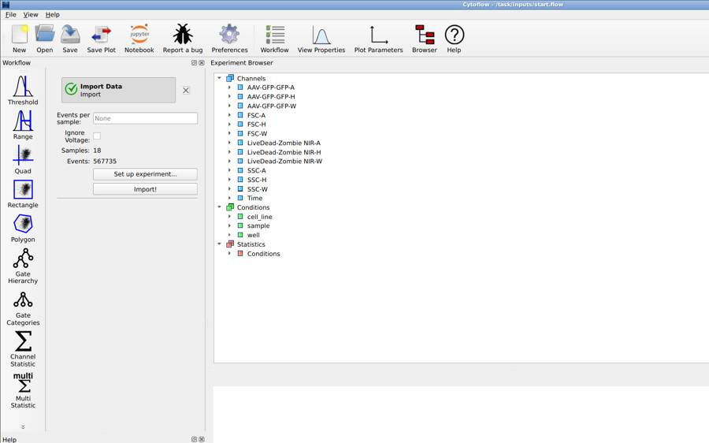
thinking
Imported 18 files with 567,735 events; the channels are FSC, SSC, AAV-GFP-GFP (an old label, probably BL1 with the caspase AF488 antibody), LiveDead-Zombie NIR and Time. I'm checking the detector metadata to confirm that mapping next.
cu click 466 177; sleep 0.5; cu screenshot /tmp/screen.png
{
"file_path": "/tmp/screen.png"
}/tmp/screen.png
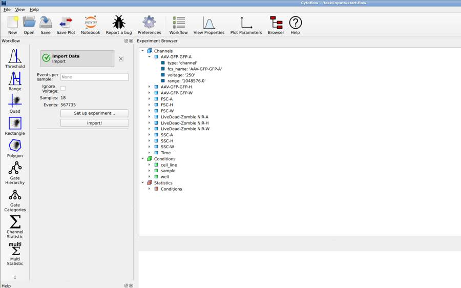
cu click 466 365; sleep 0.3; cu click 466 309; sleep 0.5; cu screenshot /tmp/screen.png
{
"file_path": "/tmp/screen.png"
}/tmp/screen.png
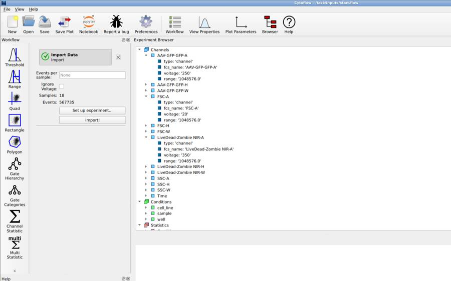
cu drag 1043 750 1043 230; sleep 1; cu click 46 1000; cu screenshot /tmp/screen.png
{
"file_path": "/tmp/screen.png"
}/tmp/screen.png
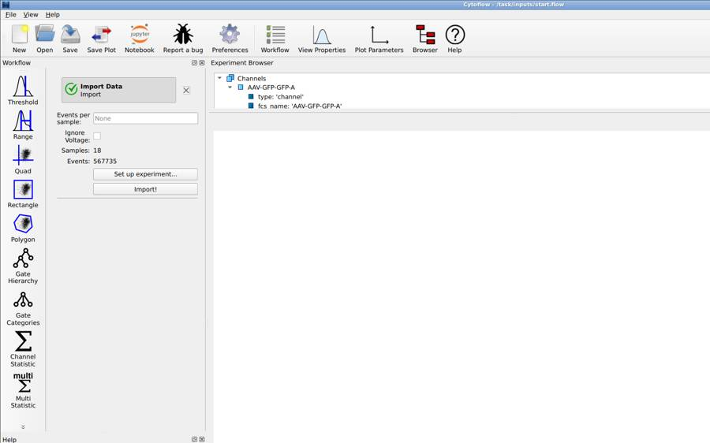
cu click 652 75; sleep 1; cu screenshot /tmp/screen.png
{
"file_path": "/tmp/screen.png"
}/tmp/screen.png
cu click 700 9 double; sleep 2; cu screenshot /tmp/screen.png
{
"file_path": "/tmp/screen.png"
}/tmp/screen.png
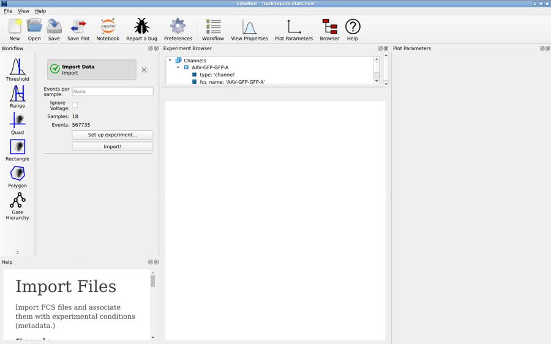
cu click 408 685; sleep 0.5; cu click 1008 126; sleep 0.5; cu click 652 75; sleep 1; cu screenshot /tmp/screen.png
{
"file_path": "/tmp/screen.png"
}/tmp/screen.png
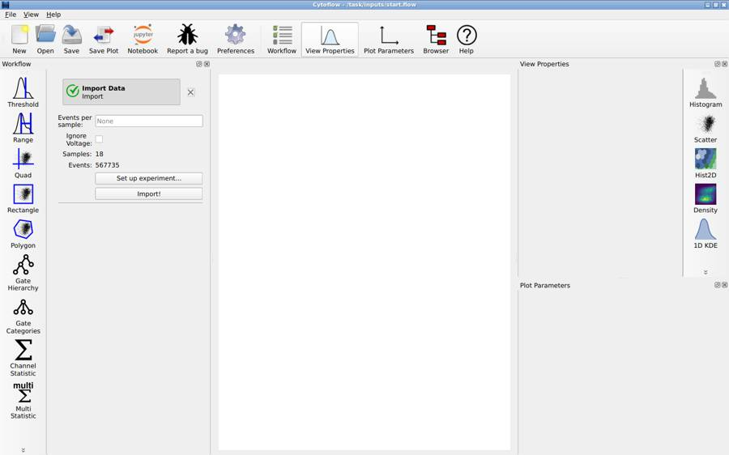
cu click 1393 385; sleep 2; cu screenshot /tmp/screen.png
{
"file_path": "/tmp/screen.png"
}/tmp/screen.png
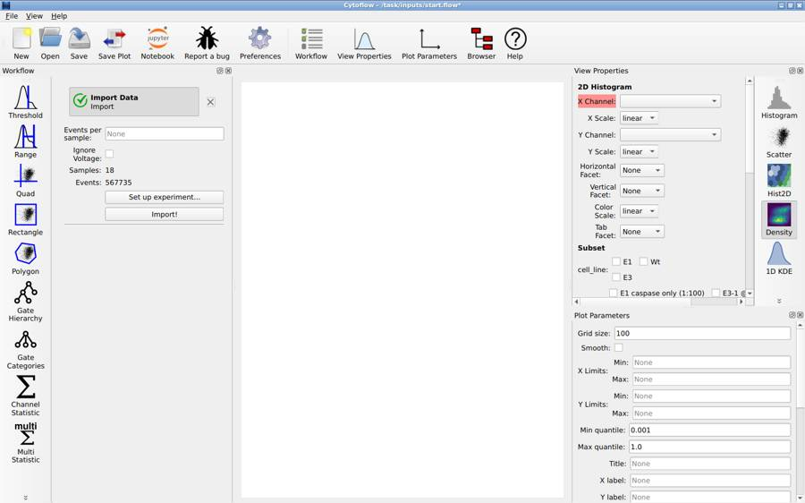
cu click 1198 181; sleep 1; cu screenshot /tmp/screen.png
{
"file_path": "/tmp/screen.png"
}/tmp/screen.png
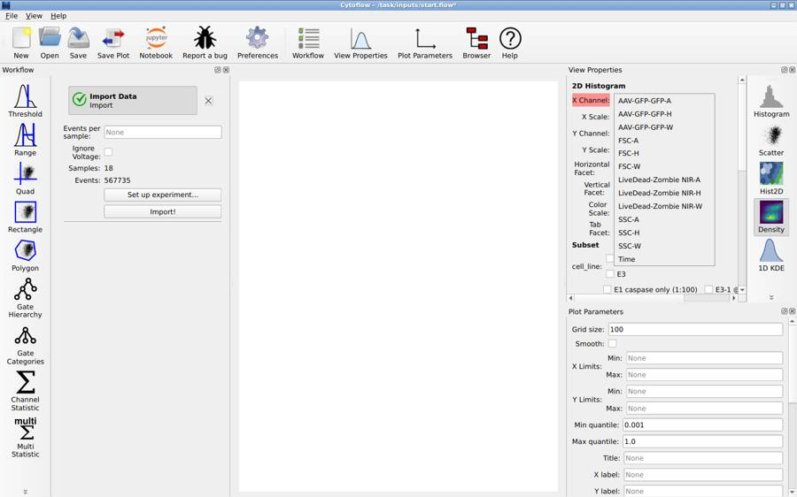
cu click 1135 254; sleep 0.5; cu click 1198 241; sleep 1; cu screenshot /tmp/screen.png
{
"file_path": "/tmp/screen.png"
}/tmp/screen.png
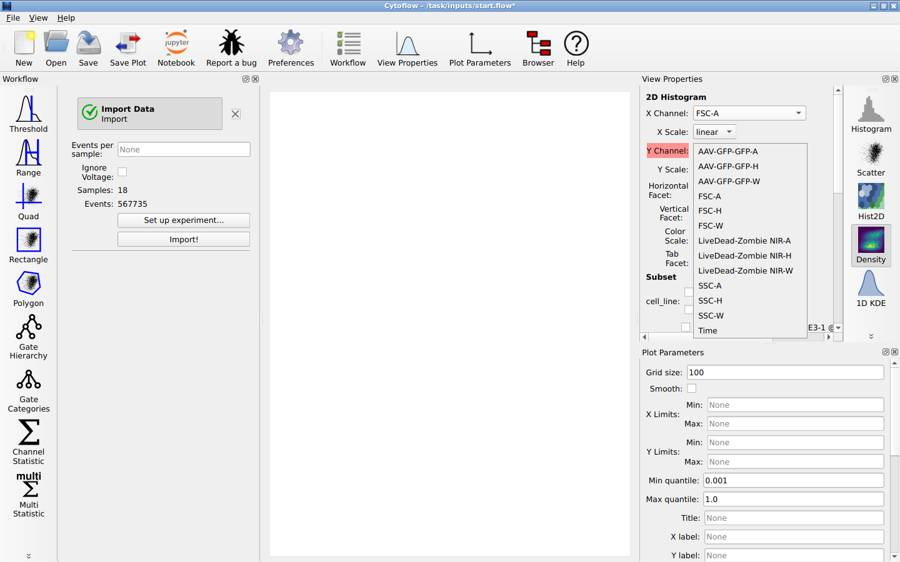
cu click 1135 457; sleep 0.5; cu click 1148 341; sleep 1; cu screenshot /tmp/screen.png
{
"file_path": "/tmp/screen.png"
}/tmp/screen.png
cu key Escape; sleep 0.3; cu click 1141 377; sleep 0.7; cu screenshot /tmp/screen.png
{
"file_path": "/tmp/screen.png"
}/tmp/screen.png
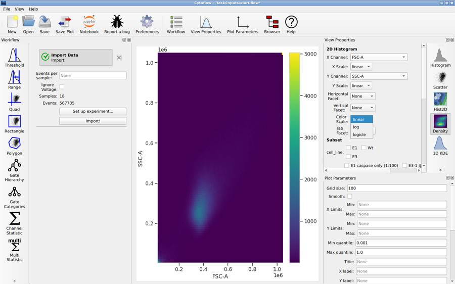
cu click 1127 402; sleep 1.5; cu click 1148 304; sleep 0.7; cu screenshot /tmp/screen.png
{
"file_path": "/tmp/screen.png"
}/tmp/screen.png
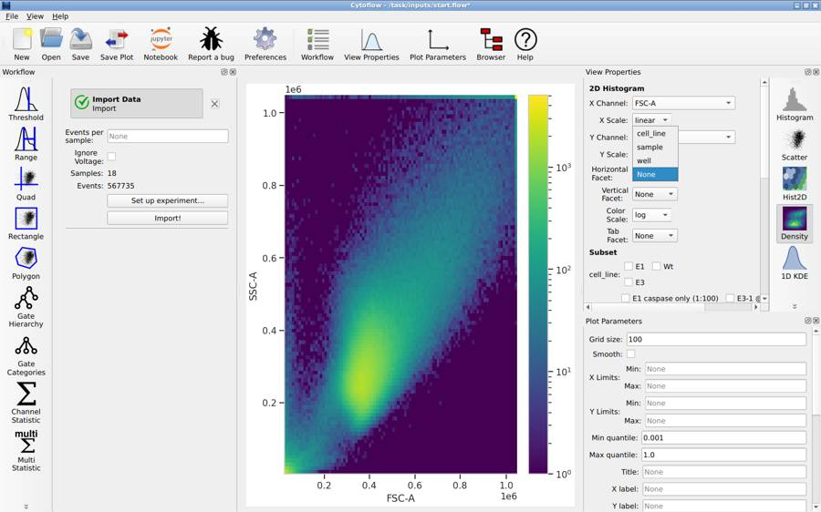
cu key Escape; sleep 0.3; cu click 1148 414; sleep 0.7; cu screenshot /tmp/screen.png
{
"file_path": "/tmp/screen.png"
}/tmp/screen.png
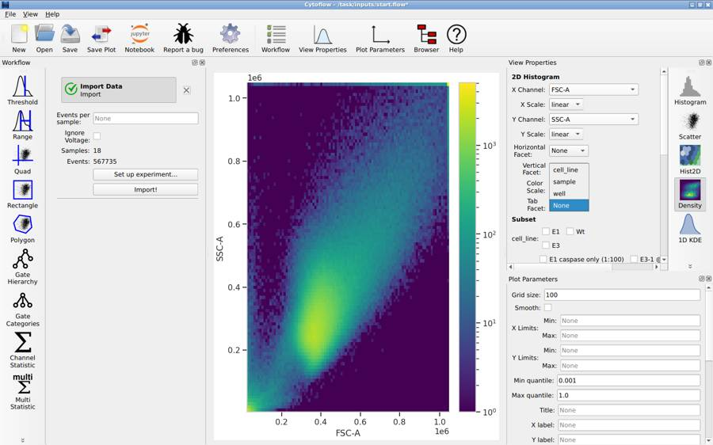
cu click 1130 391; sleep 3; cu screenshot /tmp/screen.png
{
"file_path": "/tmp/screen.png"
}/tmp/screen.png
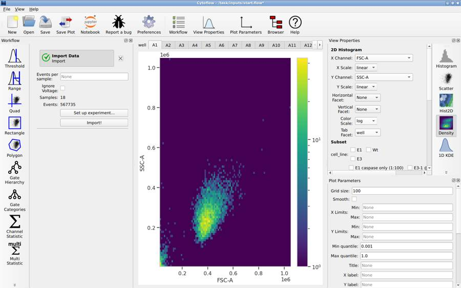
mkdir -p /tmp/work && cat > /tmp/work/tile.py <<'EOF'
import sys, matplotlib
matplotlib.use('Agg')
import matplotlib.pyplot as plt, matplotlib.image as mpimg
# usage: tile.py out.png x0 y0 x1 y1 ncols label1:file1 ...
out=sys.argv[1]; x0,y0,x1,y1=map(int,sys.argv[2:6]); nc=int(sys.argv[6]); items=sys.argv[7:]
n=len(items); nr=(n+nc-1)//nc
w=(x1-x0)/100; h=(y1-y0)/100
fig,axs=plt.subplots(nr,nc,figsize=(w*nc*0.6,h*nr*0.6),squeeze=False)
for ax in axs.flat: ax.axis('off')
for ax,it in zip(axs.flat,items):
lab,f=it.split(':',1); im=mpimg.imread(f)[y0:y1,x0:x1]
ax.imshow(im); ax.set_title(lab,fontsize=10)
plt.tight_layout(); plt.savefig(out,dpi=100)
EOF
echo okok
cd /tmp/work; cu click 483 141; sleep 2; cu screenshot /tmp/work/s_1.png; for i in $(seq 2 18); do cu key Right; sleep 2.5; cu screenshot /tmp/work/s_$i.png; done; cu screenshot /tmp/screen.png
{
"file_path": "/tmp/screen.png"
}/tmp/work/s_1.png /tmp/work/s_2.png /tmp/work/s_3.png /tmp/work/s_4.png /tmp/work/s_5.png /tmp/work/s_6.png /tmp/work/s_7.png /tmp/work/s_8.png /tmp/work/s_9.png /tmp/work/s_10.png /tmp/work/s_11.png /tmp/work/s_12.png /tmp/work/s_13.png /tmp/work/s_14.png /tmp/work/s_15.png /tmp/work/s_16.png /tmp/work/s_17.png /tmp/work/s_18.png /tmp/screen.png Shell cwd was reset to /task
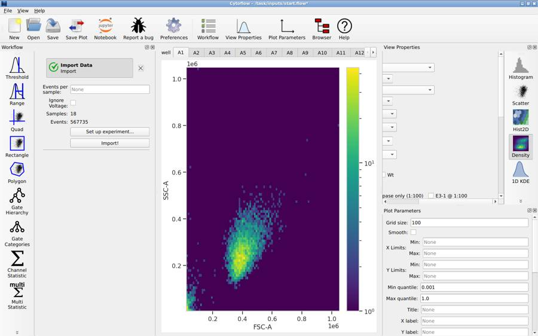
cu drag 1100 539 1000 539; sleep 0.5; i=1; for x in 483 525 567 608 650 692 733 775 817 862 912 962; do cu click $x 141; sleep 2.5; cu screenshot /tmp/work/s_$i.png; i=$((i+1)); done; cu screenshot /tmp/screen.png
{
"file_path": "/tmp/screen.png"
}/tmp/work/s_1.png /tmp/work/s_2.png /tmp/work/s_3.png /tmp/work/s_4.png /tmp/work/s_5.png /tmp/work/s_6.png /tmp/work/s_7.png /tmp/work/s_8.png /tmp/work/s_9.png /tmp/work/s_10.png /tmp/work/s_11.png /tmp/work/s_12.png /tmp/screen.png
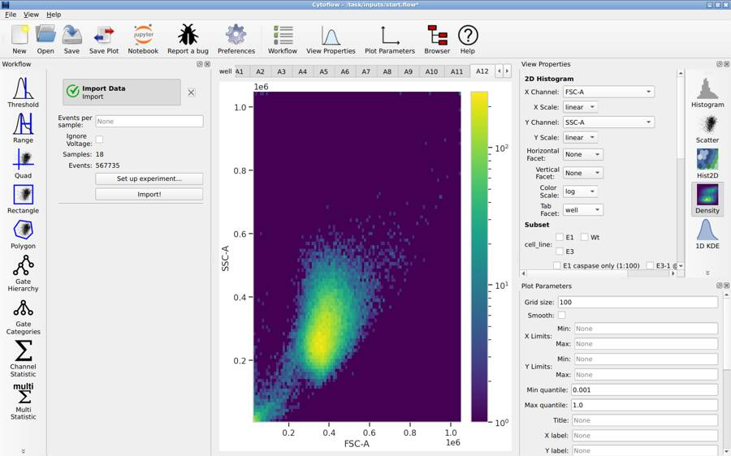
cd /tmp/work; for k in 1 2 3 4 5 6 7; do cu click 998 140; sleep 0.3; done; sleep 1; cu screenshot /tmp/screen.png
{
"file_path": "/tmp/screen.png"
}/tmp/screen.png Shell cwd was reset to /task
cd /tmp/work; i=13; for x in 745 787 829 870 912 954; do cu click $x 141; sleep 2.5; cu screenshot /tmp/work/s_$i.png; i=$((i+1)); done; python3 tile.py /tmp/work/t1.png 432 128 1008 890 6 $(for i in $(seq 1 18); do echo -n "$i:/tmp/work/s_$i.png "; done); echo done
{
"file_path": "/tmp/work/t1.png"
}/tmp/work/s_13.png /tmp/work/s_14.png /tmp/work/s_15.png /tmp/work/s_16.png /tmp/work/s_17.png /tmp/work/s_18.png done Shell cwd was reset to /task
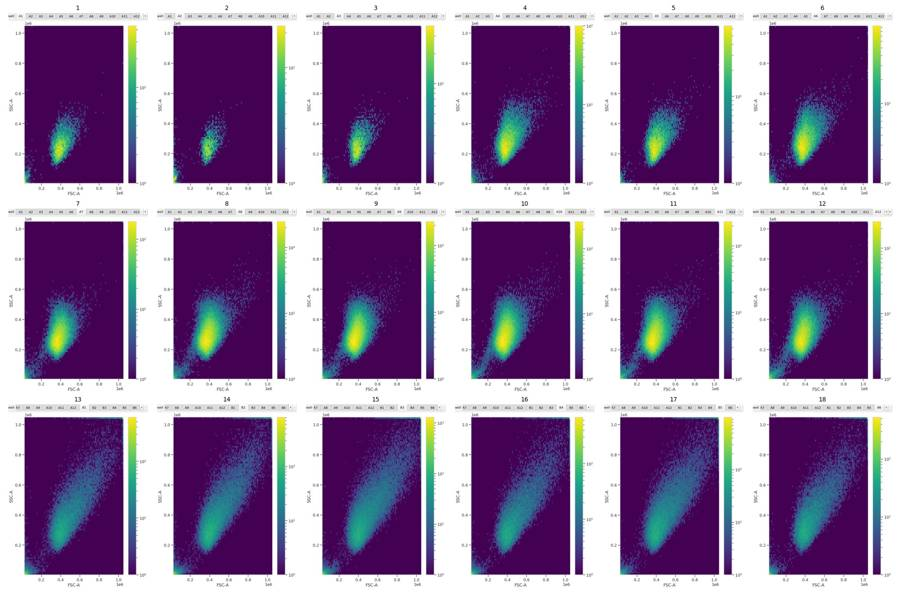
thinking
All 18 tabs check out, but E3's six wells show a much broader FSC/SSC spread that piles up at saturation, which points to the cell line or clumping rather than one bad well. I'm checking the Time histograms for clogs or a sample running dry next.
cu click 1393 180; sleep 2; cu screenshot /tmp/screen.png
{
"file_path": "/tmp/screen.png"
}/tmp/screen.png
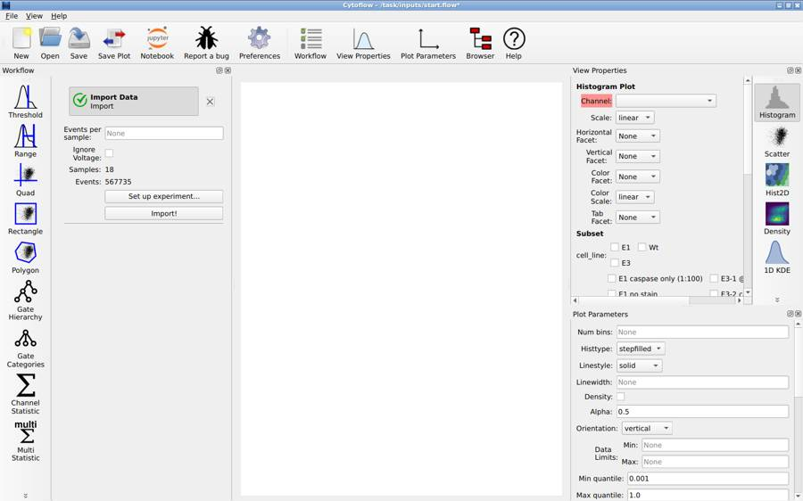
cu click 1193 181; sleep 1; cu screenshot /tmp/screen.png
{
"file_path": "/tmp/screen.png"
}/tmp/screen.png
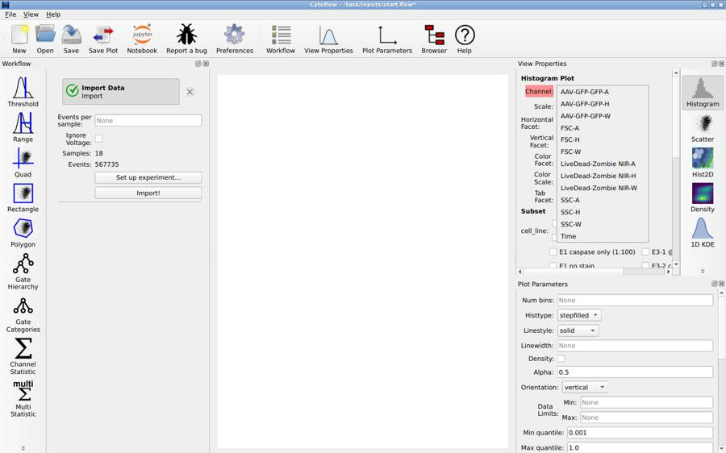
cu click 1127 469; sleep 2; cu click 1143 390; sleep 1; cu screenshot /tmp/screen.png
{
"file_path": "/tmp/screen.png"
}/tmp/screen.png
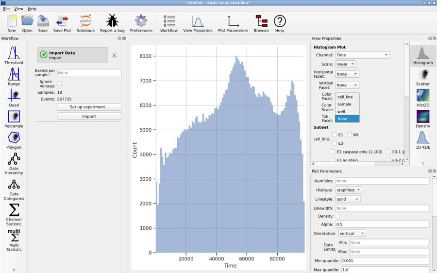
cu click 1125 367; sleep 3; cu screenshot /tmp/screen.png
{
"file_path": "/tmp/screen.png"
}/tmp/screen.png
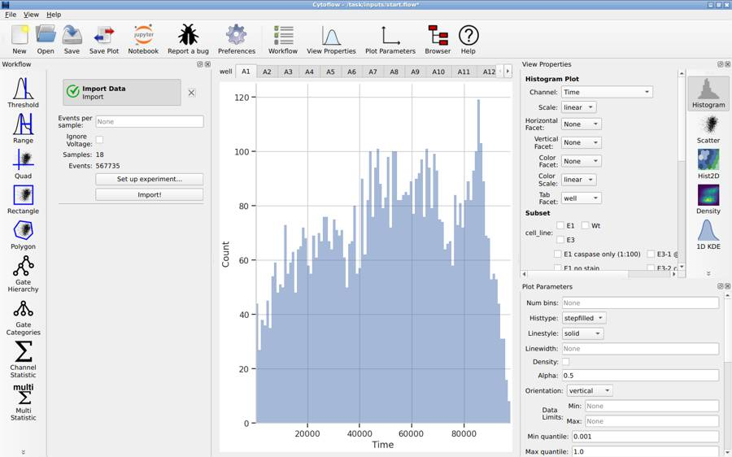
cd /tmp/work; i=1; for x in 483 525 567 608 650 692 733 775 817 862 912 962; do cu click $x 141; sleep 2; cu screenshot /tmp/work/s_$i.png; i=$((i+1)); done; for k in 1 2 3 4 5 6 7; do cu click 998 140; sleep 0.2; done; sleep 0.5; for x in 745 787 829 870 912 954; do cu click $x 141; sleep 2; cu screenshot /tmp/work/s_$i.png; i=$((i+1)); done; python3 tile.py /tmp/work/t2.png 432 128 1008 890 6 $(for i in $(seq 1 18); do echo -n "$i:/tmp/work/s_$i.png "; done); echo done
{
"file_path": "/tmp/work/t2.png"
}/tmp/work/s_1.png /tmp/work/s_2.png /tmp/work/s_3.png /tmp/work/s_4.png /tmp/work/s_5.png /tmp/work/s_6.png /tmp/work/s_7.png /tmp/work/s_8.png /tmp/work/s_9.png /tmp/work/s_10.png /tmp/work/s_11.png /tmp/work/s_12.png /tmp/work/s_13.png /tmp/work/s_14.png /tmp/work/s_15.png /tmp/work/s_16.png /tmp/work/s_17.png /tmp/work/s_18.png done Shell cwd was reset to /task

thinking
All 18 wells show steady time profiles with no clogs or dry runs, so I'm adding the cells polygon gate on FSC-A/SSC-A next.
cu click 45 460; sleep 2; cu screenshot /tmp/screen.png
{
"file_path": "/tmp/screen.png"
}/tmp/screen.png
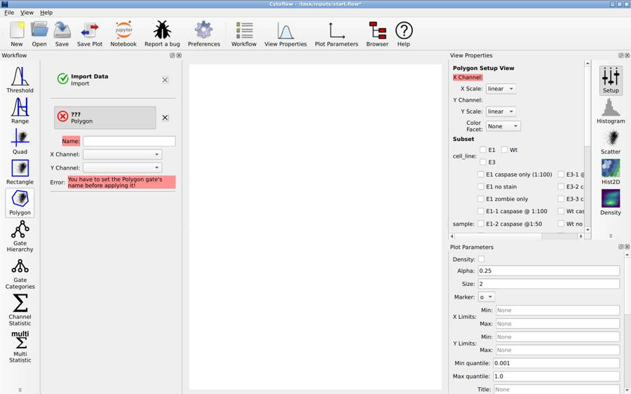
cu click 295 322; cu type "cells"; cu key Tab; sleep 0.5; cu click 280 353; sleep 1; cu screenshot /tmp/screen.png
{
"file_path": "/tmp/screen.png"
}/tmp/screen.png
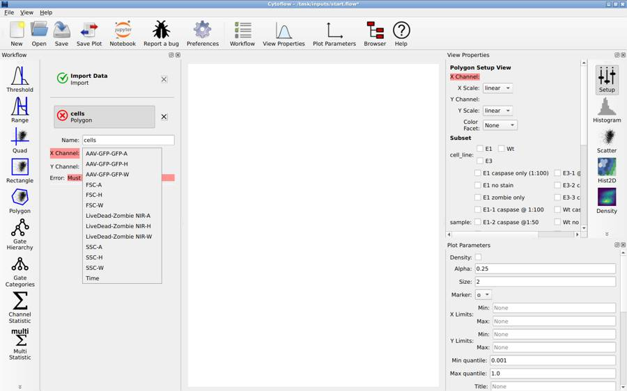
cu click 216 425; sleep 0.7; cu click 280 384; sleep 1; cu screenshot /tmp/screen.png
{
"file_path": "/tmp/screen.png"
}/tmp/screen.png
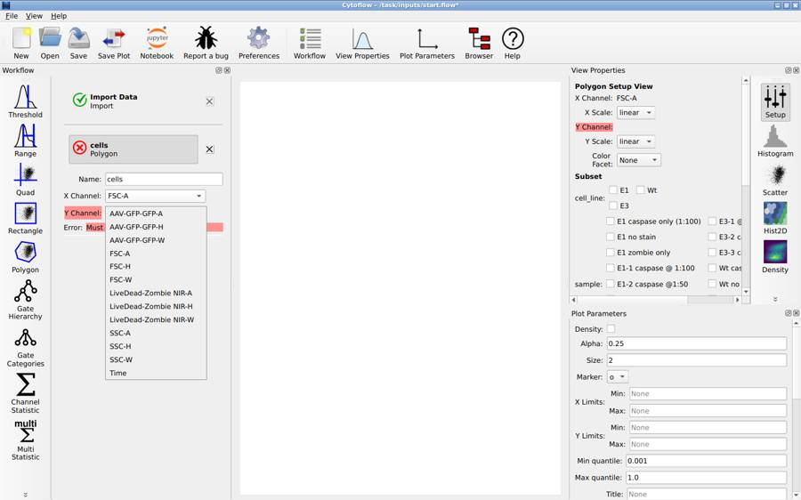
cu click 216 599; sleep 3; cu screenshot /tmp/screen.png
{
"file_path": "/tmp/screen.png"
}/tmp/screen.png
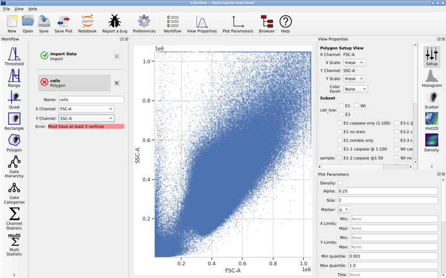
cu click 1250 618 triple; cu type "0.02"; cu key Return; sleep 3; cu screenshot /tmp/screen.png
{
"file_path": "/tmp/screen.png"
}/tmp/screen.png

cu click 1250 618; cu key ctrl+a; cu type "0.02"; cu key Tab; sleep 4; cu screenshot /tmp/screen.png
{
"file_path": "/tmp/screen.png"
}/tmp/screen.png
thinking
The FSC/SSC plot is clean at low alpha, with the main cells clustered around FSC 0.25–0.55e6 and debris at the origin. I'm drawing the `cells` gate to exclude debris below about 0.16e6 FSC and events saturated at the maximum.
for p in "565 771" "634 809" "758 797" "991 549" "991 186" "857 186" "659 421"; do cu click $p; sleep 0.4; done; cu click 565 612 double; sleep 3; cu screenshot /tmp/screen.png
{
"file_path": "/tmp/screen.png"
}/tmp/screen.png
sleep 2; cu screenshot /tmp/screen.png
{
"file_path": "/tmp/screen.png"
}/tmp/screen.png
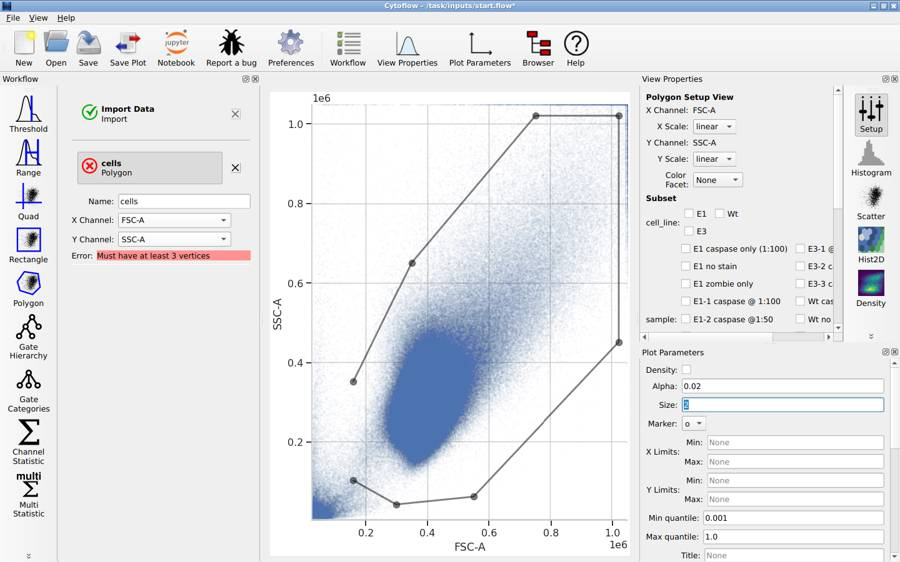
cu click 565 771; sleep 4; cu screenshot /tmp/screen.png
{
"file_path": "/tmp/screen.png"
}/tmp/screen.png
cu click 20 28; sleep 1; cu screenshot /tmp/screen.png
{
"file_path": "/tmp/screen.png"
}/tmp/screen.png
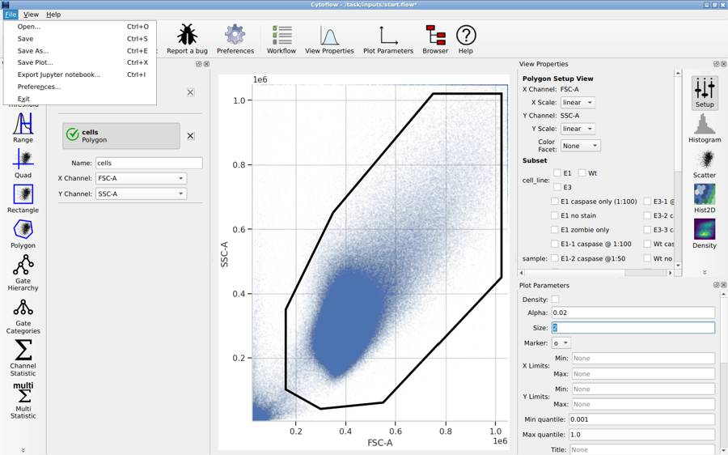
cu click 65 100; sleep 1.5; cu screenshot /tmp/screen.png
{
"file_path": "/tmp/screen.png"
}/tmp/screen.png
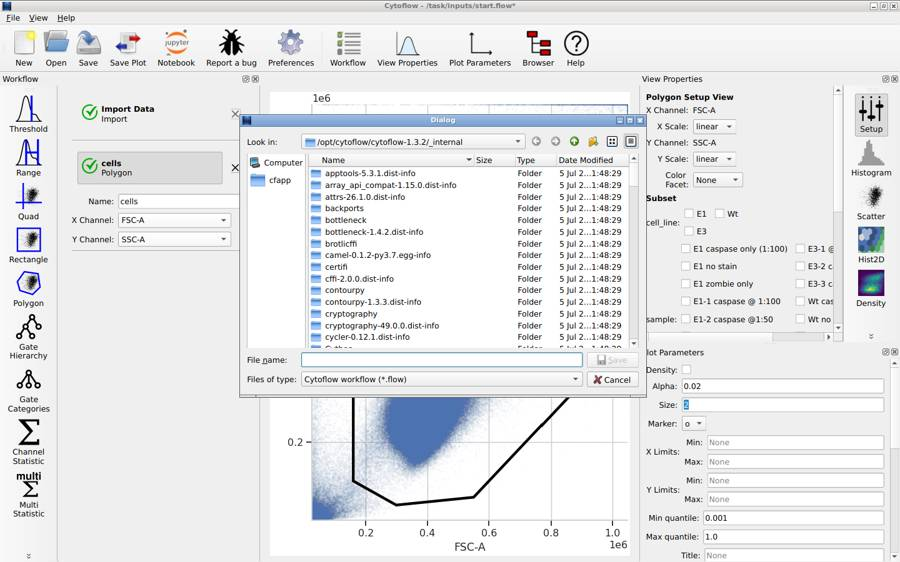
cu click 706 576; cu paste "/task/outputs/workflow.flow"; cu key Return; sleep 2; cu screenshot /tmp/screen.png; ls -la /task/outputs
{
"file_path": "/tmp/screen.png"
}/tmp/screen.png total 32 drwxrwsrwx 2 agent task 4096 Nov 6 00:41 . drwxr-xr-x 4 root root 4096 Nov 5 22:08 .. -rw-rw-r-- 1 cfapp task 22784 Nov 6 00:41 workflow.flow
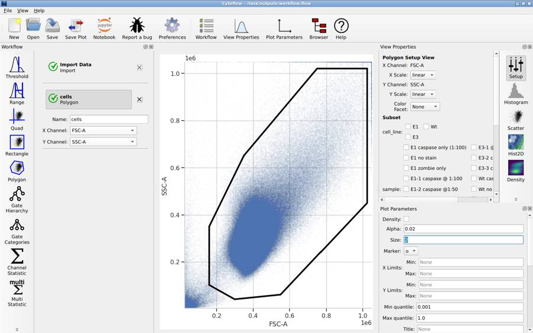
grep -n -A30 "polygon" /task/outputs/workflow.flow | head -60
779: current_view: &id005 !polygon-view;3 780- current_plot: null 781- huefacet: '' 782- huescale: linear 783: op: &id004 !polygon;1 784- name: cells 785- vertices: 786- - !!python/tuple 787- - 159393.76875024586 788- - 102632.29462888562 789- - !!python/tuple 790- - 298845.6683457713 791- - 42197.92058833939 792- - !!python/tuple 793- - 550281.6691316431 794- - 61798.25811500302 795- - !!python/tuple 796- - 1023572.964728578 797- - 450538.2857271653 798- - !!python/tuple 799- - 1023572.964728578 800- - 1020581.4354609662 801- - !!python/tuple 802- - 751007.8882464145 803- - 1020581.4354609662 804- - !!python/tuple 805- - 349555.4500168715 806- - 651441.7453754676 807- - !!python/tuple 808- - 159393.76875024586 809- - 350903.23663329176 810- - !!python/tuple 811- - 159393.76875024586 812- - 350903.23663329176 813- xchannel: FSC-A -- 817: plot_params: !polygon-params;1 818- alpha: 0.02 819- col_wrap: null 820- density: false 821- despine: true 822- gridsize: 50 823- huelabel: '' 824- legend: true 825- marker: o 826- max_quantile: 1.0 827- min_quantile: 0.001 828- s: 2.0 829- sharex: true 830- sharey: true 831- smoothed: false 832- smoothed_sigma: 1.0 833- sns_context: notebook 834- sns_style: whitegrid 835- title: '' 836- xlabel: '' 837- xlim: *id002 838- ylabel: '' 839- ylim: *id003 840- subset_list:
cu click 45 460; sleep 2; cu click 295 408; cu type "singlets"; cu key Tab; sleep 0.5; cu screenshot /tmp/screen.png
{
"file_path": "/tmp/screen.png"
}/tmp/screen.png
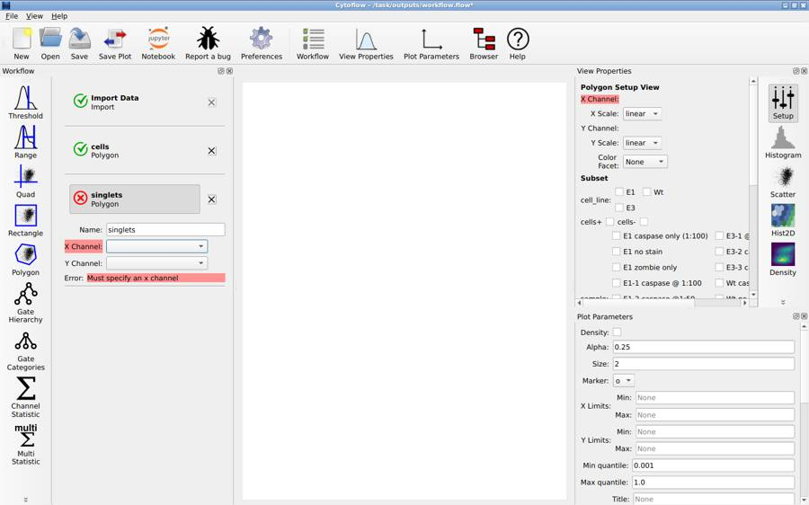
cu click 280 439; sleep 0.8; cu screenshot /tmp/screen.png
{
"file_path": "/tmp/screen.png"
}/tmp/screen.png
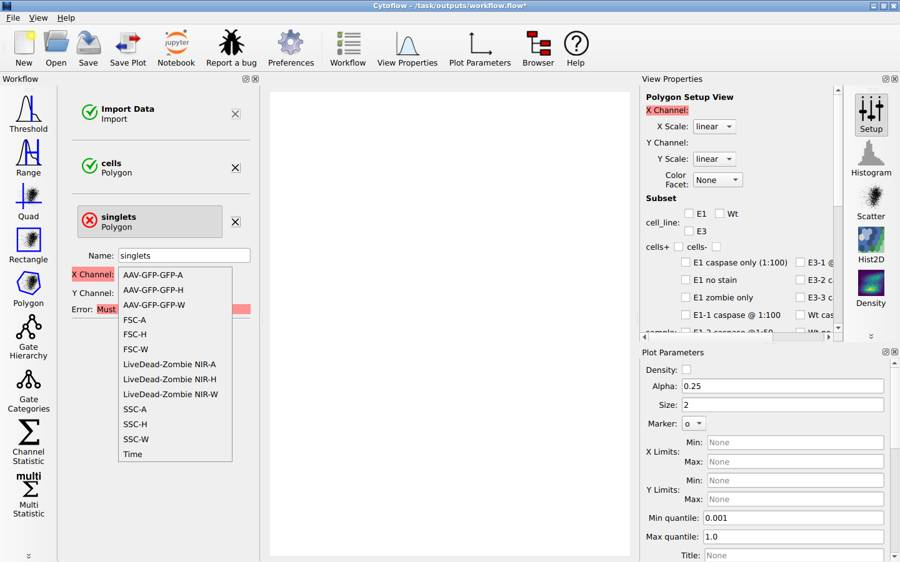
cu click 216 512; sleep 0.8; cu click 280 469; sleep 0.8; cu screenshot /tmp/screen.png
{
"file_path": "/tmp/screen.png"
}/tmp/screen.png
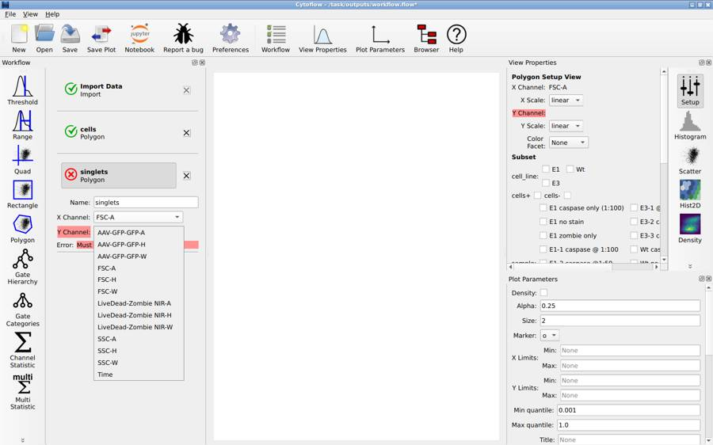
cu click 216 565; sleep 1; cu click 1086 395; sleep 1; cu click 1250 618; cu key ctrl+a; cu type "0.02"; cu key Tab; sleep 5; cu screenshot /tmp/screen.png
{
"file_path": "/tmp/screen.png"
}/tmp/screen.png
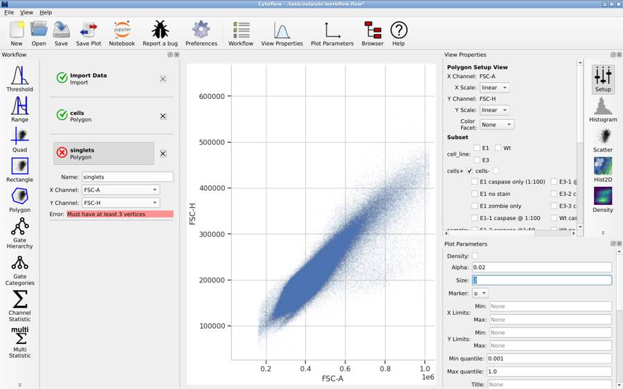
cu click 1393 455; sleep 2; cu screenshot /tmp/screen.png
{
"file_path": "/tmp/screen.png"
}/tmp/screen.png
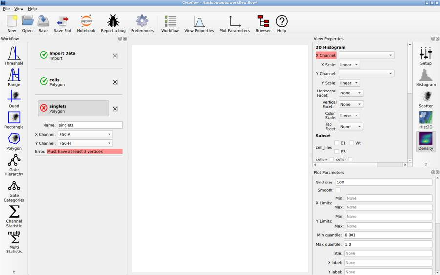
cu click 1198 181; sleep 0.8; cu click 1135 254; sleep 0.8; cu click 1198 241; sleep 0.8; cu click 1135 337; sleep 0.8; cu click 1141 377; sleep 0.8; cu click 1127 402; sleep 0.8; cu click 1086 521; sleep 0.8; cu click 1148 341; sleep 0.8; cu screenshot /tmp/screen.png
{
"file_path": "/tmp/screen.png"
}/tmp/screen.png
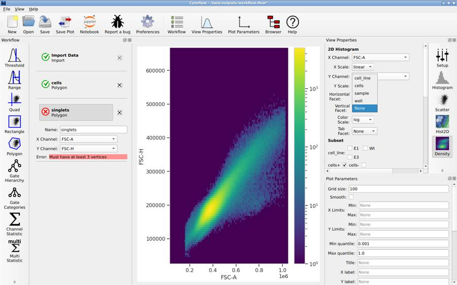
cu key Escape; sleep 0.5; cu click 1148 414; sleep 0.8; cu screenshot /tmp/screen.png
{
"file_path": "/tmp/screen.png"
}/tmp/screen.png
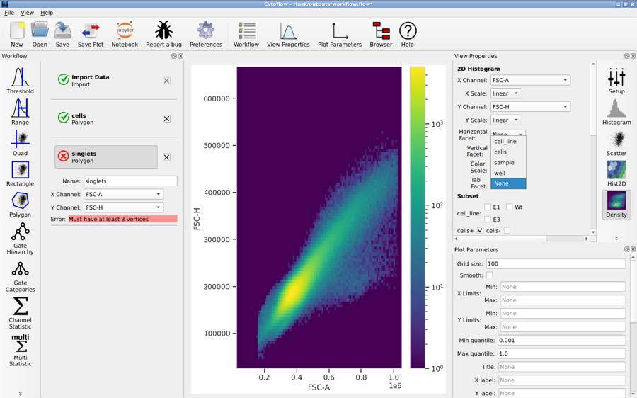
cu click 1140 319; sleep 3; cu screenshot /tmp/screen.png
{
"file_path": "/tmp/screen.png"
}/tmp/screen.png
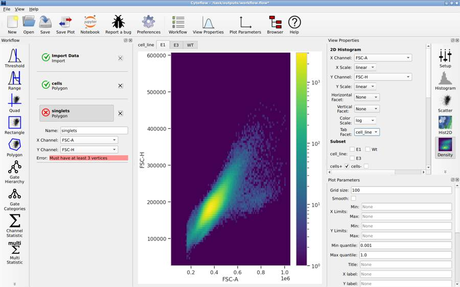
cu click 551 141; sleep 3; cu screenshot /tmp/work/e3.png; cu click 595 141; sleep 3; cu screenshot /tmp/work/wt.png; cu click 509 141; sleep 3; cu screenshot /tmp/work/e1.png; python3 /tmp/work/tile.py /tmp/work/t3.png 432 128 1008 890 3 E1:/tmp/work/e1.png E3:/tmp/work/e3.png WT:/tmp/work/wt.png
{
"file_path": "/tmp/work/t3.png"
}/tmp/work/e3.png /tmp/work/wt.png /tmp/work/e1.png
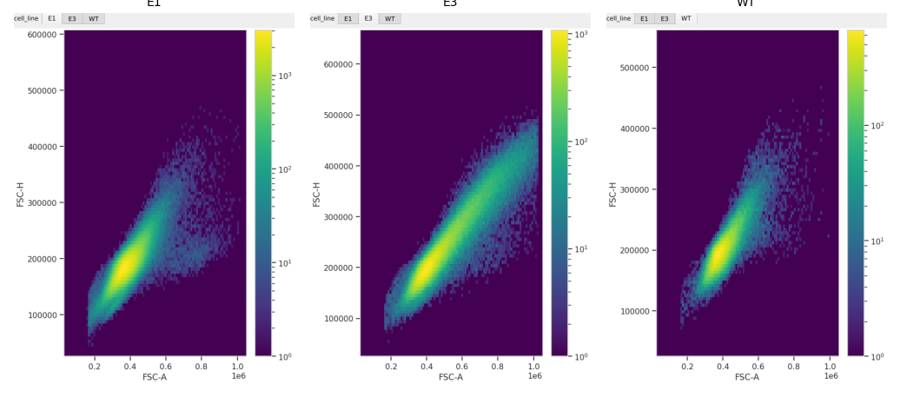
cd /tmp/work && python3 -c "
import matplotlib; matplotlib.use('Agg')
import matplotlib.pyplot as plt, matplotlib.image as mpimg
fig,axs=plt.subplots(1,2,figsize=(11.5,7.6))
for ax,f in zip(axs,['e1.png','e3.png']):
ax.imshow(mpimg.imread(f)[128:890,432:1008]); ax.axis('off')
plt.tight_layout(); plt.savefig('t4.png',dpi=100)"{
"file_path": "/tmp/work/t4.png"
}Shell cwd was reset to /task
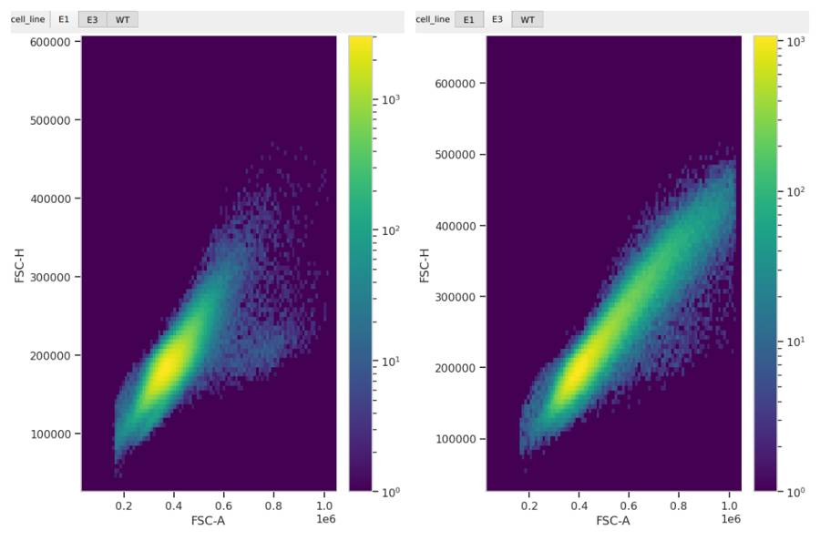
cu click 1393 180; sleep 4; cu screenshot /tmp/screen.png
{
"file_path": "/tmp/screen.png"
}/tmp/screen.png
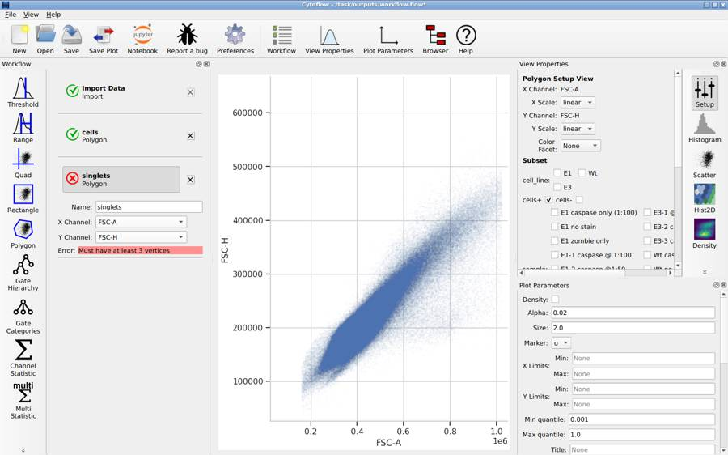
for p in "586 818" "996 494" "996 265" "775 371" "586 680"; do cu click $p; sleep 0.4; done; cu click 586 818; sleep 5; cu screenshot /tmp/screen.png
{
"file_path": "/tmp/screen.png"
}/tmp/screen.png
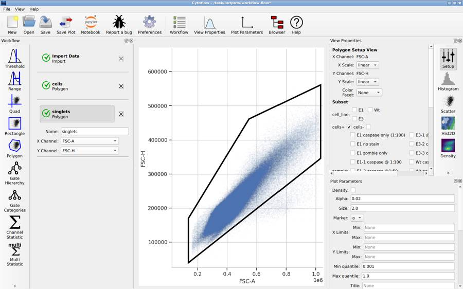
thinking
The singlets gate is applied to exclude the doublet cloud in E1 and WT. I'm setting up the live gate on Zombie NIR (RL3) using the unstained, Zombie-only and stained wells next.
cu click 45 250; sleep 2; cu screenshot /tmp/screen.png
{
"file_path": "/tmp/screen.png"
}/tmp/screen.png
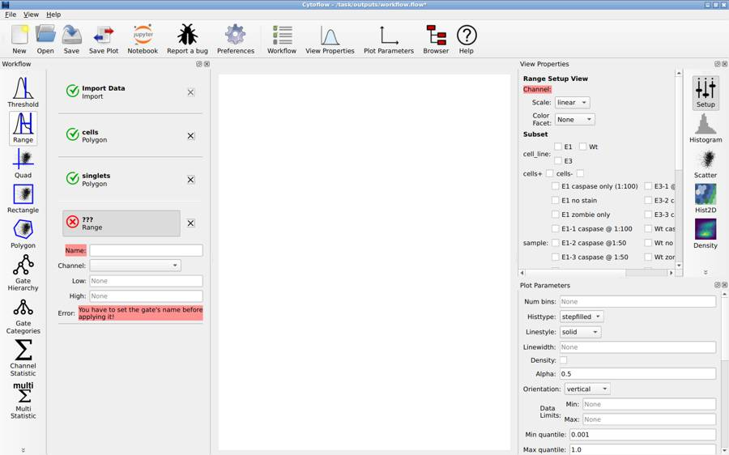
cu click 288 495; cu type "live"; cu key Tab; sleep 0.5; cu click 267 525; sleep 0.8; cu screenshot /tmp/screen.png
{
"file_path": "/tmp/screen.png"
}/tmp/screen.png
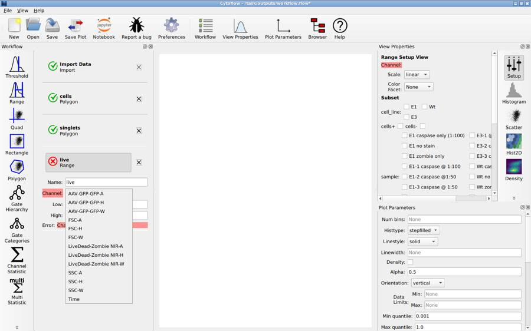
cu click 258 669; sleep 1; cu click 1130 202; sleep 0.8; cu screenshot /tmp/screen.png
{
"file_path": "/tmp/screen.png"
}/tmp/screen.png
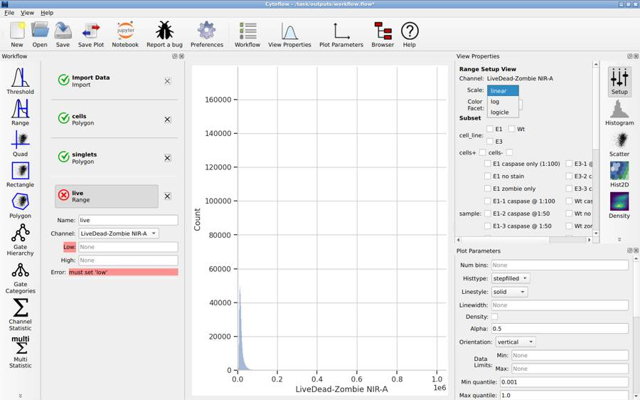
cu click 1124 252; sleep 3; cu click 1136 236; sleep 0.8; cu screenshot /tmp/screen.png
{
"file_path": "/tmp/screen.png"
}/tmp/screen.png
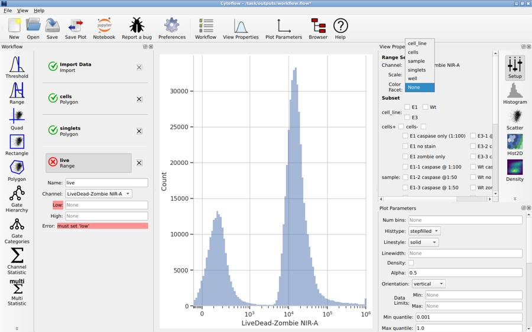
cu click 1127 165; sleep 3; cu screenshot /tmp/screen.png
{
"file_path": "/tmp/screen.png"
}/tmp/screen.png
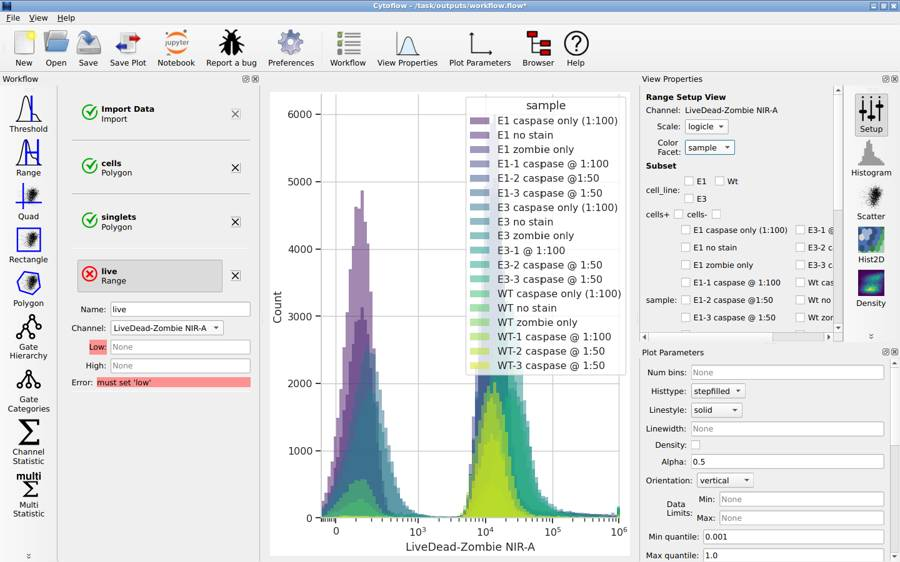
cu click 1393 455; sleep 2; cu click 1198 181; sleep 0.8; cu screenshot /tmp/screen.png
{
"file_path": "/tmp/screen.png"
}/tmp/screen.png
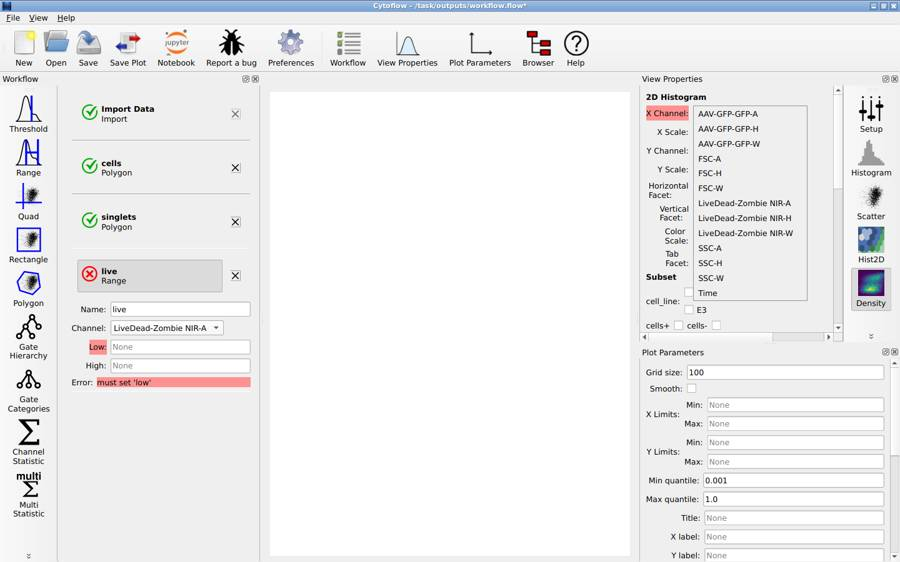
cu click 1190 325; sleep 0.8; cu click 1141 211; sleep 0.8; cu click 1135 260; sleep 0.8; cu click 1198 241; sleep 0.8; cu click 1165 242; sleep 0.8; cu click 1141 271; sleep 0.8; cu click 1135 320; sleep 0.8; cu click 1141 377; sleep 0.8; cu click 1127 402; sleep 0.8; cu screenshot /tmp/screen.png
{
"file_path": "/tmp/screen.png"
}/tmp/screen.png
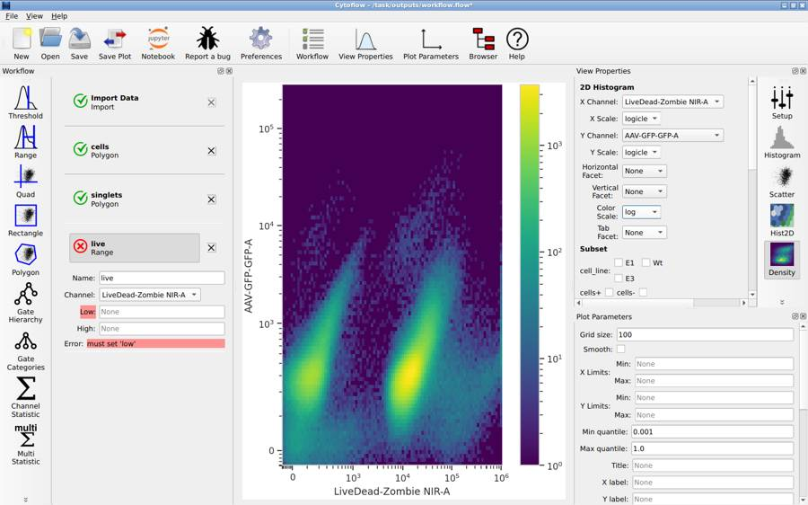
cu click 1086 521; sleep 2; cu scroll 1180 450 down 10; sleep 0.8; cu screenshot /tmp/screen.png
{
"file_path": "/tmp/screen.png"
}/tmp/screen.png
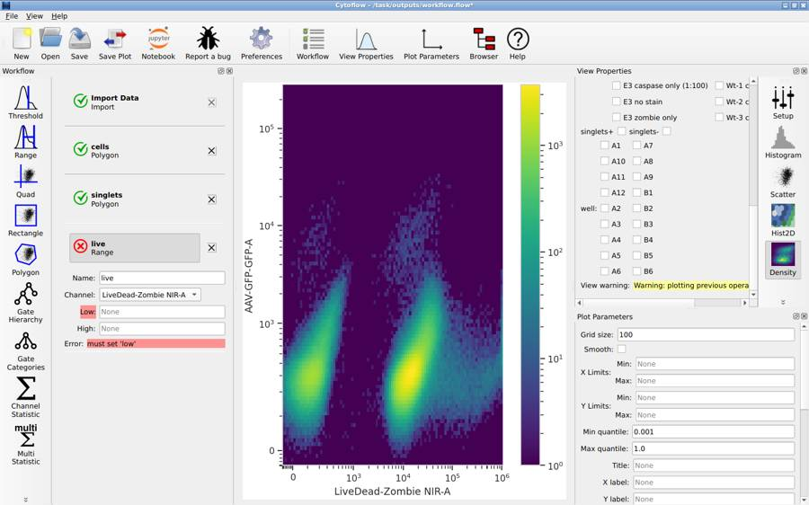
cu click 1106 234; sleep 3; cu scroll 1180 300 up 15; sleep 0.5; cu click 1148 414; sleep 0.8; cu screenshot /tmp/screen.png
{
"file_path": "/tmp/screen.png"
}/tmp/screen.png
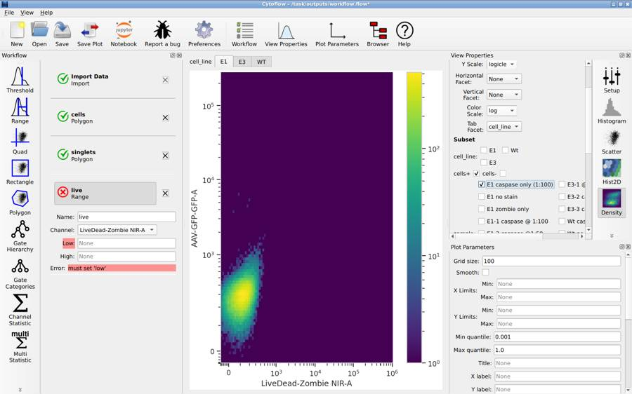
cu click 1097 421; sleep 2; cu click 1148 289; sleep 0.8; cu screenshot /tmp/screen.png
{
"file_path": "/tmp/screen.png"
}/tmp/screen.png
cu click 1130 385; sleep 3; cu click 483 141; sleep 2; cu screenshot /tmp/screen.png
{
"file_path": "/tmp/screen.png"
}/tmp/screen.png
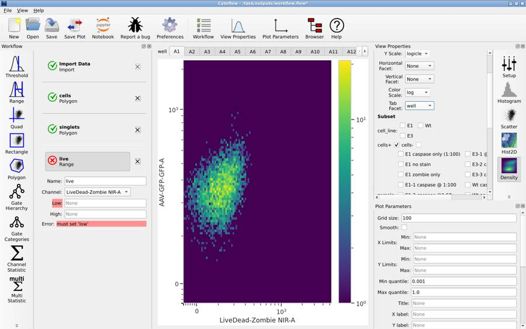
cu click 1270 648; cu key ctrl+a; cu type "-300"; cu key Tab; sleep 1; cu click 1270 678; cu key ctrl+a; cu type "1050000"; cu key Tab; sleep 1; cu click 1270 708; cu key ctrl+a; cu type "-300"; cu key Tab; sleep 1; cu click 1270 739; cu key ctrl+a; cu type "300000"; cu key Tab; sleep 4; cu screenshot /tmp/screen.png
{
"file_path": "/tmp/screen.png"
}/tmp/screen.png
cd /tmp/work; i=1; for x in 483 525 567 608 650 692 733 775 817 862 912 962; do cu click $x 141; sleep 2.5; cu screenshot /tmp/work/s_$i.png; i=$((i+1)); done; for k in 1 2 3 4 5 6 7; do cu click 998 140; sleep 0.2; done; sleep 0.5; for x in 745 787 829 870 912 954; do cu click $x 141; sleep 2.5; cu screenshot /tmp/work/s_$i.png; i=$((i+1)); done; python3 tile.py /tmp/work/t5.png 432 128 1008 890 6 $(for i in $(seq 1 18); do echo -n "$i:/tmp/work/s_$i.png "; done); echo done
{
"file_path": "/tmp/work/t5.png"
}/tmp/work/s_1.png /tmp/work/s_2.png /tmp/work/s_3.png /tmp/work/s_4.png /tmp/work/s_5.png /tmp/work/s_6.png /tmp/work/s_7.png /tmp/work/s_8.png /tmp/work/s_9.png /tmp/work/s_10.png /tmp/work/s_11.png /tmp/work/s_12.png /tmp/work/s_13.png /tmp/work/s_14.png /tmp/work/s_15.png /tmp/work/s_16.png /tmp/work/s_17.png /tmp/work/s_18.png done Shell cwd was reset to /task
thinking
Unstained and single-stain controls show Zombie NIR around 10²–10³ and caspase near 10²–10³, with E3 showing a distinct BL1-bright population at about 5×10³–2×10⁴. I'm now examining the Zombie NIR distribution to set the live/dead cutoff.
cd /tmp/work && python3 -c "
import matplotlib; matplotlib.use('Agg')
import matplotlib.pyplot as plt, matplotlib.image as mpimg
fig,axs=plt.subplots(1,3,figsize=(17,7.6))
for ax,f,t in zip(axs,['s_9.png','s_15.png','s_17.png'],['A9','B3','B5']):
ax.imshow(mpimg.imread(f)[128:890,432:1008]); ax.axis('off'); ax.set_title(t)
plt.tight_layout(); plt.savefig('t6.png',dpi=90)"{
"file_path": "/tmp/work/t6.png"
}Shell cwd was reset to /task
cu scroll 1180 300 up 15; sleep 0.5; cu screenshot /tmp/screen.png
{
"file_path": "/tmp/screen.png"
}/tmp/screen.png
cu drag 1341 250 1341 100; sleep 0.8; cu screenshot /tmp/screen.png
{
"file_path": "/tmp/screen.png"
}/tmp/screen.png
cu click 1198 241; sleep 0.8; cu click 1135 314; sleep 1; cu click 1141 271; sleep 0.8; cu click 1135 272; sleep 1; cu click 1270 708; cu key ctrl+a; cu type "0"; cu key Tab; sleep 1; cu click 1270 739; cu key ctrl+a; cu type "1050000"; cu key Tab; sleep 4; cu screenshot /tmp/work/z_e1.png; cu click 551 141; sleep 3; cu screenshot /tmp/work/z_e3.png; cu click 595 141; sleep 3; cu screenshot /tmp/work/z_wt.png; python3 /tmp/work/tile.py /tmp/work/t7.png 432 128 1008 890 3 E1:/tmp/work/z_e1.png E3:/tmp/work/z_e3.png WT:/tmp/work/z_wt.png
{
"file_path": "/tmp/work/t7.png"
}/tmp/work/z_e1.png /tmp/work/z_e3.png /tmp/work/z_wt.png
cu click 1141 271; sleep 0.8; cu screenshot /tmp/screen.png
{
"file_path": "/tmp/screen.png"
}/tmp/screen.png
cu click 1135 224; sleep 1; cu click 1270 708; cu key ctrl+a; cu type "100000"; cu key Tab; sleep 4; cu screenshot /tmp/work/z_wt.png; cu click 551 141; sleep 3; cu screenshot /tmp/work/z_e3.png; cu click 509 141; sleep 3; cu screenshot /tmp/work/z_e1.png; python3 /tmp/work/tile.py /tmp/work/t7.png 432 128 1008 890 3 E1:/tmp/work/z_e1.png E3:/tmp/work/z_e3.png WT:/tmp/work/z_wt.png
{
"file_path": "/tmp/work/t7.png"
}/tmp/work/z_wt.png /tmp/work/z_e3.png /tmp/work/z_e1.png
thinking
Live and dead cells split cleanly on Zombie NIR vs FSC-A, but a single Zombie cutoff would misclassify large live E3 cells, so I'm swapping the Range gate for a polygon `live` gate.
cu click 377 441; sleep 2; cu click 45 460; sleep 2; cu screenshot /tmp/screen.png
{
"file_path": "/tmp/screen.png"
}/tmp/screen.png
cu click 295 495; cu type "live"; cu key Tab; sleep 0.5; cu click 280 525; sleep 0.8; cu screenshot /tmp/screen.png
{
"file_path": "/tmp/screen.png"
}/tmp/screen.png
cu click 270 669; sleep 1; cu click 280 555; sleep 0.8; cu screenshot /tmp/screen.png
{
"file_path": "/tmp/screen.png"
}/tmp/screen.png
cu click 216 628; sleep 1; cu click 1141 202; sleep 0.8; cu screenshot /tmp/screen.png
{
"file_path": "/tmp/screen.png"
}/tmp/screen.png
cu click 1137 252; sleep 2; cu click 1086 395; sleep 2; cu drag 1341 250 1341 420; sleep 0.8; cu screenshot /tmp/screen.png
{
"file_path": "/tmp/screen.png"
}/tmp/screen.png
cu click 1106 286; sleep 2; cu click 1250 618; cu key ctrl+a; cu type "0.02"; cu key Tab; sleep 1; cu click 1270 708; cu key ctrl+a; cu type "-3000"; cu key Tab; sleep 1; cu click 1270 739; cu key ctrl+a; cu type "1048576"; cu key Tab; sleep 1; cu click 1270 769; cu key ctrl+a; cu type "100000"; cu key Tab; sleep 1; cu click 1270 799; cu key ctrl+a; cu type "1060000"; cu key Tab; sleep 5; cu screenshot /tmp/screen.png
{
"file_path": "/tmp/screen.png"
}/tmp/screen.png
for p in "501 870" "847 870" "847 640" "895 176" "501 176"; do cu click $p; sleep 0.4; done; cu click 501 870; sleep 5; cu screenshot /tmp/screen.png
{
"file_path": "/tmp/screen.png"
}/tmp/screen.png
cu click 501 826; sleep 0.4; cu click 847 826; sleep 0.4; cu click 847 640; sleep 5; cu screenshot /tmp/screen.png
{
"file_path": "/tmp/screen.png"
}/tmp/screen.png
cu key ctrl+s; sleep 2; grep -n -A25 "name: live" /task/outputs/workflow.flow | head -30
1888: name: live 1889- vertices: 1890- - !!python/tuple 1891- - 50709.39388430837 1892- - 374471.13353729504 1893- - !!python/tuple 1894- - 138897.9859695059 1895- - 1047714.6316271336 1896- - !!python/tuple 1897- - -64.47733983939895 1898- - 1047714.6316271336 1899- - !!python/tuple 1900- - -64.47733983939895 1901- - 105777.54012924289 1902- - !!python/tuple 1903- - 50709.39388430837 1904- - 105777.54012924289 1905- xchannel: LiveDead-Zombie NIR-A 1906- xscale: logicle 1907- ychannel: FSC-A 1908- yscale: linear 1909- plot_params: !polygon-params;1 1910- alpha: 0.02 1911- col_wrap: null 1912- density: false 1913- despine: true
cu scroll 1180 300 up 15; sleep 0.5; cu screenshot /tmp/screen.png
{
"file_path": "/tmp/screen.png"
}/tmp/screen.png
cu click 1141 202; sleep 0.8; cu click 1135 204; sleep 2; cu click 1270 708; cu key ctrl+a; cu type "-200000"; cu key Tab; sleep 1; cu click 1270 739; cu key ctrl+a; cu type "400000"; cu key Tab; sleep 5; cu screenshot /tmp/screen.png
{
"file_path": "/tmp/screen.png"
}/tmp/screen.png
cu click 1141 202; sleep 0.8; cu screenshot /tmp/screen.png
{
"file_path": "/tmp/screen.png"
}/tmp/screen.png
cu click 1135 156; sleep 5; cu screenshot /tmp/screen.png
{
"file_path": "/tmp/screen.png"
}/tmp/screen.png
for p in "538 829" "698 829" "698 643" "768 176" "538 176"; do cu click $p; sleep 0.4; done; cu click 538 829; sleep 5; cu screenshot /tmp/screen.png; cu key ctrl+s; sleep 2; grep -n -A20 "name: live" /task/outputs/workflow.flow | head -22
{
"file_path": "/tmp/screen.png"
}/tmp/screen.png 1888: name: live 1889- vertices: 1890- - !!python/tuple 1891- - -150668.81006725825 1892- - 106577.61938358928 1893- - !!python/tuple 1894- - 52377.4967644281 1895- - 106577.61938358928 1896- - !!python/tuple 1897- - 52377.4967644281 1898- - 375278.9709297053 1899- - !!python/tuple 1900- - 140715.82506133063 1901- - 1047782.9122294819 1902- - !!python/tuple 1903- - -150668.81006725825 1904- - 1047782.9122294819 1905- xchannel: LiveDead-Zombie NIR-A 1906- xscale: linear 1907- ychannel: FSC-A 1908- yscale: linear
cu click 45 460; sleep 2; cu screenshot /tmp/screen.png
{
"file_path": "/tmp/screen.png"
}/tmp/screen.png
cu click 295 581; cu type "casp3_pos"; cu key Tab; sleep 0.5; cu click 280 612; sleep 0.8; cu screenshot /tmp/screen.png
{
"file_path": "/tmp/screen.png"
}/tmp/screen.png
cu click 216 672; sleep 1; cu click 280 642; sleep 0.8; cu screenshot /tmp/screen.png
{
"file_path": "/tmp/screen.png"
}/tmp/screen.png
cu click 244 600; sleep 1; cu click 1080 417; sleep 2; cu click 1141 254; sleep 0.8; cu screenshot /tmp/screen.png
{
"file_path": "/tmp/screen.png"
}/tmp/screen.png
cu click 1137 304; sleep 3; cu click 1270 769; cu key ctrl+a; cu type "-300"; cu key Tab; sleep 1; cu click 1270 799; cu key ctrl+a; cu type "1048576"; cu key Tab; sleep 1; cu click 1270 708; cu key ctrl+a; cu type "100000"; cu key Tab; sleep 1; cu click 1270 739; cu key ctrl+a; cu type "1050000"; cu key Tab; sleep 1; cu click 1250 618; cu key ctrl+a; cu type "0.05"; cu key Tab; sleep 5; cu screenshot /tmp/screen.png
{
"file_path": "/tmp/screen.png"
}/tmp/screen.png
cu click 1393 455; sleep 2; cu click 1198 181; sleep 0.8; cu click 1135 254; sleep 0.8; cu click 1198 241; sleep 0.8; cu click 1165 182; sleep 0.8; cu click 1141 271; sleep 0.8; cu click 1135 320; sleep 0.8; cu screenshot /tmp/screen.png
{
"file_path": "/tmp/screen.png"
}/tmp/screen.png
cu click 1198 241; sleep 0.8; cu screenshot /tmp/screen.png
{
"file_path": "/tmp/screen.png"
}/tmp/screen.png
cu click 1165 242; sleep 1; cu click 1141 377; sleep 0.8; cu click 1127 402; sleep 1; cu click 1148 414; sleep 0.8; cu screenshot /tmp/screen.png
{
"file_path": "/tmp/screen.png"
}/tmp/screen.png
cu click 1130 390; sleep 3; cu scroll 1180 450 down 2; sleep 0.8; cu screenshot /tmp/screen.png
{
"file_path": "/tmp/screen.png"
}/tmp/screen.png
cu click 1080 418; sleep 3; cu click 1270 648; cu key ctrl+a; cu type "100000"; cu key Tab; sleep 1; cu click 1270 678; cu key ctrl+a; cu type "1050000"; cu key Tab; sleep 1; cu click 1270 708; cu key ctrl+a; cu type "-300"; cu key Tab; sleep 1; cu click 1270 739; cu key ctrl+a; cu type "300000"; cu key Tab; sleep 4; cu screenshot /tmp/screen.png
{
"file_path": "/tmp/screen.png"
}/tmp/screen.png
cd /tmp/work; i=1; for x in 483 525 567 608 650 692 733 775 817 862 912 962; do cu click $x 141; sleep 2.5; cu screenshot /tmp/work/s_$i.png; i=$((i+1)); done; for k in 1 2 3 4 5 6 7; do cu click 998 140; sleep 0.2; done; sleep 0.5; for x in 745 787 829 870 912 954; do cu click $x 141; sleep 2.5; cu screenshot /tmp/work/s_$i.png; i=$((i+1)); done; python3 tile.py /tmp/work/t8.png 432 128 1008 890 6 $(for i in $(seq 1 18); do echo -n "$i:/tmp/work/s_$i.png "; done); echo done
{
"file_path": "/tmp/work/t8.png"
}/tmp/work/s_1.png /tmp/work/s_2.png /tmp/work/s_3.png /tmp/work/s_4.png /tmp/work/s_5.png /tmp/work/s_6.png /tmp/work/s_7.png /tmp/work/s_8.png /tmp/work/s_9.png /tmp/work/s_10.png /tmp/work/s_11.png /tmp/work/s_12.png /tmp/work/s_13.png /tmp/work/s_14.png /tmp/work/s_15.png /tmp/work/s_16.png /tmp/work/s_17.png /tmp/work/s_18.png done Shell cwd was reset to /task
cd /tmp/work && python3 -c "
import matplotlib; matplotlib.use('Agg')
import matplotlib.pyplot as plt, matplotlib.image as mpimg
fig,axs=plt.subplots(2,3,figsize=(17,15))
for ax,(f,t) in zip(axs.flat,[('s_13.png','B1 E3 nostain'),('s_15.png','B3 E3 zombie'),('s_14.png','B2 E3 casp only'),('s_9.png','A9 E1 zombie'),('s_17.png','B5 E3 1:50'),('s_12.png','A12 E1 1:50')]):
ax.imshow(mpimg.imread(f)[150:890,432:1008]); ax.axis('off'); ax.set_title(t)
plt.tight_layout(); plt.savefig('t9.png',dpi=70)"{
"file_path": "/tmp/work/t9.png"
}Shell cwd was reset to /task
cu click 1393 180; sleep 4; cu screenshot /tmp/screen.png
{
"file_path": "/tmp/screen.png"
}/tmp/screen.png
cu click 1270 799; cu key ctrl+a; cu type "5000000"; cu key Tab; sleep 4; cu screenshot /tmp/screen.png
{
"file_path": "/tmp/screen.png"
}/tmp/screen.png
for p in "503 567" "715 553" "1003 501" "1003 154" "503 154"; do cu click $p; sleep 0.4; done; cu click 503 567; sleep 5; cu screenshot /tmp/screen.png; cu key ctrl+s; sleep 2; grep -n -A22 "name: casp3_pos" /task/outputs/workflow.flow | head -24
{
"file_path": "/tmp/screen.png"
}/tmp/screen.png 2290: name: casp3_pos 2291- vertices: [] 2292- xchannel: FSC-A 2293- xscale: linear 2294- ychannel: AAV-GFP-GFP-A 2295- yscale: logicle 2296- plot_params: !polygon-params;1 2297- alpha: 0.05 2298- col_wrap: null 2299- density: false 2300- despine: true 2301- gridsize: 50 2302- huelabel: '' 2303- legend: true 2304- marker: o 2305- max_quantile: 1.0 2306- min_quantile: 0.001 2307- s: 2.0 2308- sharex: true 2309- sharey: true 2310- smoothed: false 2311- smoothed_sigma: 1.0 2312- sns_context: notebook
for p in "1000 501" "1000 157" "508 157" "508 567"; do cu click $p; sleep 0.5; done; cu click 715 553; sleep 5; cu screenshot /tmp/screen.png; cu key ctrl+s; sleep 2; grep -n -A22 "name: casp3_pos" /task/outputs/workflow.flow | head -24
{
"file_path": "/tmp/screen.png"
}/tmp/screen.png 2426: name: casp3_pos 2427- vertices: 2428- - !!python/tuple 2429- - 503298.1570727973 2430- - 2471.1203161344097 2431- - !!python/tuple 2432- - 503298.1570727973 2433- - 2471.1203161344097 2434- - !!python/tuple 2435- - 1044405.2684433836 2436- - 5444.018605907934 2437- - !!python/tuple 2438- - 1044405.2684433836 2439- - 1044137.4683144231 2440- - !!python/tuple 2441- - 110304.30611386779 2442- - 1044137.4683144231 2443- - !!python/tuple 2444- - 110304.30611386779 2445- - 2014.3086850677118 2446- xchannel: FSC-A 2447- xscale: linear 2448- ychannel: AAV-GFP-GFP-A
cu click 45 705; sleep 2; cu screenshot /tmp/screen.png
{
"file_path": "/tmp/screen.png"
}/tmp/screen.png
cu click 288 668; cu type "counts"; cu key Tab; sleep 0.5; cu click 267 698; sleep 0.8; cu screenshot /tmp/screen.png
{
"file_path": "/tmp/screen.png"
}/tmp/screen.png
cu click 210 672; sleep 0.8; cu click 254 728; sleep 0.8; cu screenshot /tmp/screen.png
{
"file_path": "/tmp/screen.png"
}/tmp/screen.png
cu click 205 576; sleep 0.8; cu click 185 757; sleep 0.5; cu click 185 813; sleep 0.5; cu click 185 842; sleep 0.5; cu click 365 785; sleep 0.5; cu click 365 813; sleep 0.5; cu screenshot /tmp/screen.png
{
"file_path": "/tmp/screen.png"
}/tmp/screen.png
cu click 1393 537; sleep 0.5; cu click 1393 537; sleep 0.5; cu click 1393 537; sleep 0.8; cu screenshot /tmp/screen.png
{
"file_path": "/tmp/screen.png"
}/tmp/screen.png
cu click 1405 185; sleep 3; cu screenshot /tmp/screen.png
{
"file_path": "/tmp/screen.png"
}/tmp/screen.png
cu click 1393 537; sleep 1; cu screenshot /tmp/screen.png
{
"file_path": "/tmp/screen.png"
}/tmp/screen.png
cu click 1142 181; sleep 0.8; cu screenshot /tmp/screen.png
{
"file_path": "/tmp/screen.png"
}/tmp/screen.png
cu click 1124 206; sleep 3; cu screenshot /tmp/screen.png
{
"file_path": "/tmp/screen.png"
}/tmp/screen.png
cu click 1142 211; sleep 2; cu screenshot /tmp/screen.png
{
"file_path": "/tmp/screen.png"
}/tmp/screen.png
mkdir -p /task/outputs/cytoflow_exports 2>/dev/null; cu click 706 567; cu paste "/task/outputs/cytoflow_exports/counts_long.csv"; cu key Return; sleep 3; ls -la /task/outputs/cytoflow_exports; head -5 /task/outputs/cytoflow_exports/counts_long.csv; wc -l /task/outputs/cytoflow_exports/counts_long.csv
Exit code 1 total 8 drwxr-sr-x 2 root task 4096 Nov 6 00:57 . drwxrwsrwx 3 agent task 4096 Nov 6 00:57 .. head: cannot open '/task/outputs/cytoflow_exports/counts_long.csv' for reading: No such file or directory wc: /task/outputs/cytoflow_exports/counts_long.csv: No such file or directory
chmod 2777 /task/outputs/cytoflow_exports; ls -la /task/outputs/cytoflow_exports; cu screenshot /tmp/screen.png
total 8 drwxrwsrwx 2 root task 4096 Nov 6 00:57 . drwxrwsrwx 3 agent task 4096 Nov 6 00:57 .. /tmp/screen.png
{
"file_path": "/tmp/screen.png"
}cu click 950 468; sleep 1; cu click 1142 211; sleep 2; cu click 706 567; cu paste "/task/outputs/cytoflow_exports/counts_long.csv"; cu key Return; sleep 3; ls -la /task/outputs/cytoflow_exports; head -5 /task/outputs/cytoflow_exports/counts_long.csv; wc -l /task/outputs/cytoflow_exports/counts_long.csv; cu screenshot /tmp/screen.png
{
"file_path": "/tmp/screen.png"
}total 12 drwxrwsrwx 2 root task 4096 Nov 6 00:58 . drwxrwsrwx 3 agent task 4096 Nov 6 00:57 .. -rw-rw-r-- 1 cfapp task 3398 Nov 6 00:58 counts_long.csv casp3_pos,cells,live,singlets,well,FSC-A 0,0,0,0,A1,517.0 0,0,0,0,A10,1469.0 0,0,0,0,A11,1566.0 0,0,0,0,A12,1889.0 202 /task/outputs/cytoflow_exports/counts_long.csv /tmp/screen.png
cu key ctrl+s; sleep 2; ls -la /task/outputs; cd /task && python3 - <<'EOF'
import pandas as pd
d=pd.read_csv('/task/outputs/cytoflow_exports/counts_long.csv')
d.columns=['casp3_pos','cells','live','singlets','well','n']
for c in ['casp3_pos','cells','live','singlets']: d[c]=d[c].astype(bool)
print(d.dtypes); print(d.head())
lay=pd.read_csv('/task/inputs/plate_layout.csv')
rows=[]
for w,g in d.groupby('well'):
tot=g.n.sum()
cells=g[g.cells].n.sum()
sing=g[g.cells&g.singlets].n.sum()
live=g[g.cells&g.singlets&g.live].n.sum()
pos=g[g.cells&g.singlets&g.live&g.casp3_pos].n.sum()
# also casp3 among all singlets (incl dead)
pos_sing=g[g.cells&g.singlets&g.casp3_pos].n.sum()
rows.append(dict(well=w,total=tot,cells=cells,singlets=sing,live=live,pos=pos,pos_sing=pos_sing))
r=pd.DataFrame(rows).merge(lay[['well','sample']],on='well')
r['order']=r.well.map({w:i for i,w in enumerate(lay.well)}); r=r.sort_values('order')
r['%cells']=100*r.cells/r.total; r['%sing']=100*r.singlets/r.cells; r['%live']=100*r.live/r.singlets; r['%pos']=100*r.pos/r.live; r['%pos_sing']=100*r.pos_sing/r.singlets
pd.set_option('display.width',250)
print(r.drop(columns='order').round(2).to_string(index=False))
EOFtotal 100 drwxrwsrwx 3 agent task 4096 Nov 6 00:57 . drwxr-xr-x 4 root root 4096 Nov 5 22:08 .. drwxrwsrwx 2 root task 4096 Nov 6 00:58 cytoflow_exports -rw-rw-r-- 1 cfapp task 89552 Nov 6 00:58 workflow.flow casp3_pos bool cells bool live bool singlets bool well object n float64 dtype: object casp3_pos cells live singlets well n 0 False False False False A1 517.0 1 False False False False A10 1469.0 2 False False False False A11 1566.0 3 False False False False A12 1889.0 4 False False False False A2 529.0 well total cells singlets live pos pos_sing sample %cells %sing %live %pos %pos_sing A1 6969.0 6378.0 6341.0 6341.0 0.0 0.0 WT no stain 91.52 99.42 100.00 0.00 0.00 A2 3149.0 2541.0 2535.0 2535.0 19.0 19.0 WT caspase only (1:100) 80.69 99.76 100.00 0.75 0.75 A3 5742.0 5171.0 5145.0 5072.0 0.0 0.0 WT zombie only 90.06 99.50 98.58 0.00 0.00 A4 20776.0 19716.0 19535.0 19242.0 79.0 79.0 WT-1 caspase @ 1:100 94.90 99.08 98.50 0.41 0.40 A5 13119.0 12597.0 12498.0 12360.0 70.0 70.0 WT-2 caspase @ 1:50 96.02 99.21 98.90 0.57 0.56 A6 21946.0 21054.0 20920.0 20482.0 119.0 121.0 WT-3 caspase @ 1:50 95.94 99.36 97.91 0.58 0.58 A7 33911.0 32550.0 32384.0 32384.0 1.0 1.0 E1 no stain 95.99 99.49 100.00 0.00 0.00 A8 52749.0 51069.0 50604.0 50604.0 83.0 83.0 E1 caspase only (1:100) 96.82 99.09 100.00 0.16 0.16 A9 49297.0 47489.0 47175.0 45954.0 0.0 0.0 E1 zombie only 96.33 99.34 97.41 0.00 0.00 A10 58936.0 56926.0 56419.0 54919.0 94.0 97.0 E1-1 caspase @ 1:100 96.59 99.11 97.34 0.17 0.17 A11 51193.0 49129.0 48764.0 47526.0 92.0 96.0 E1-2 caspase @1:50 95.97 99.26 97.46 0.19 0.20 A12 51047.0 48582.0 48260.0 46680.0 139.0 140.0 E1-3 caspase @ 1:50 95.17 99.34 96.73 0.30 0.29 B1 26935.0 23149.0 22996.0 22996.0 12.0 12.0 E3 no stain 85.94 99.34 100.00 0.05 0.05 B2 36048.0 31454.0 31214.0 31214.0 379.0 379.0 E3 caspase only (1:100) 87.26 99.24 100.00 1.21 1.21 B3 46022.0 40199.0 39856.0 39006.0 29.0 33.0 E3 zombie only 87.35 99.15 97.87 0.07 0.08 B4 27503.0 24001.0 23810.0 23218.0 297.0 307.0 E3-1 @ 1:100 87.27 99.20 97.51 1.28 1.29 B5 37596.0 33558.0 33287.0 32498.0 267.0 280.0 E3-2 caspase @ 1:50 89.26 99.19 97.63 0.82 0.84 B6 24797.0 21978.0 21833.0 21268.0 201.0 205.0 E3-3 caspase @ 1:50 88.63 99.34 97.41 0.95 0.94
thinking
Caspase-3+ rates are low in all groups (WT 0.41–0.58%, E1 0.17–0.30%, E3 0.82–1.28%), with negatives at 0–0.07% and WT control wells sparse (A2 at 3,149 events). Next I'm checking event rate over time and FSC saturation in every well.
cu click 240 180; sleep 2; cu click 1393 180; sleep 2; cu screenshot /tmp/screen.png
{
"file_path": "/tmp/screen.png"
}/tmp/screen.png
cd /tmp/work; for k in $(seq 1 10); do cu click 984 140; sleep 0.2; done; sleep 1; cu screenshot /tmp/screen.png
{
"file_path": "/tmp/screen.png"
}/tmp/screen.png Shell cwd was reset to /task
cd /tmp/work; i=1; for x in 483 525 567 608 650 692 733 775 817 862 912 962; do cu click $x 141; sleep 2.5; cu screenshot /tmp/work/s_$i.png; i=$((i+1)); done; for k in 1 2 3 4 5 6 7; do cu click 998 140; sleep 0.2; done; sleep 0.5; for x in 745 787 829 870 912 954; do cu click $x 141; sleep 2.5; cu screenshot /tmp/work/s_$i.png; i=$((i+1)); done; python3 tile.py /tmp/work/t10.png 432 128 1008 890 6 $(for i in $(seq 1 18); do echo -n "$i:/tmp/work/s_$i.png "; done); echo done
{
"file_path": "/tmp/work/t10.png"
}/tmp/work/s_1.png /tmp/work/s_2.png /tmp/work/s_3.png /tmp/work/s_4.png /tmp/work/s_5.png /tmp/work/s_6.png /tmp/work/s_7.png /tmp/work/s_8.png /tmp/work/s_9.png /tmp/work/s_10.png /tmp/work/s_11.png /tmp/work/s_12.png /tmp/work/s_13.png /tmp/work/s_14.png /tmp/work/s_15.png /tmp/work/s_16.png /tmp/work/s_17.png /tmp/work/s_18.png done Shell cwd was reset to /task
cu click 1193 181; sleep 1; cu screenshot /tmp/screen.png
{
"file_path": "/tmp/screen.png"
}/tmp/screen.png
cu click 1130 85; sleep 3; cu click 745 141; sleep 3; cu screenshot /tmp/work/f_b1.png; cu click 954 141; sleep 3; cu screenshot /tmp/work/f_b6.png; for k in $(seq 1 10); do cu click 984 140; sleep 0.2; done; cu click 483 141; sleep 3; cu screenshot /tmp/work/f_a1.png; cu click 733 141; sleep 3; cu screenshot /tmp/work/f_a7.png; python3 /tmp/work/tile.py /tmp/work/t11.png 432 128 1008 890 4 A1:/tmp/work/f_a1.png A7:/tmp/work/f_a7.png B1:/tmp/work/f_b1.png B6:/tmp/work/f_b6.png
{
"file_path": "/tmp/work/t11.png"
}/tmp/work/f_b1.png /tmp/work/f_b6.png /tmp/work/f_a1.png /tmp/work/f_a7.png
date; ls -la --time-style=full-iso /tmp/screen.png /tmp/work/tile.py /task/outputs/workflow.flow
Fri Nov 6 01:01:30 UTC 2026 -rw-rw-r-- 1 cfapp task 89552 2026-11-06 00:58:25.866638603 +0000 /task/outputs/workflow.flow -rw-r--r-- 1 root root 215363 2026-11-06 01:00:52.902638603 +0000 /tmp/screen.png -rw-r--r-- 1 root root 608 2026-11-06 00:36:05.296535396 +0000 /tmp/work/tile.py
thinking
Forty minutes are gone; E3 wells have a wide FSC spread with a tail hitting the detector ceiling, so I'm adding a gate to count those ceiling events per well.
cu click 240 790; sleep 1; cu click 45 180; sleep 2; cu screenshot /tmp/screen.png
{
"file_path": "/tmp/screen.png"
}/tmp/screen.png
cu click 293 754; cu type "fsc_saturated"; cu key Tab; sleep 0.5; cu click 277 784; sleep 0.8; cu screenshot /tmp/screen.png
{
"file_path": "/tmp/screen.png"
}/tmp/screen.png
cu click 213 672; sleep 1; cu click 293 815; cu key ctrl+a; cu type "1040000"; cu key Tab; sleep 4; cu screenshot /tmp/screen.png
{
"file_path": "/tmp/screen.png"
}/tmp/screen.png
cu click 45 705; sleep 2; cu screenshot /tmp/screen.png
{
"file_path": "/tmp/screen.png"
}/tmp/screen.png
cu click 288 841; cu type "counts_all"; cu key Tab; sleep 0.5; cu scroll 260 700 down 5; sleep 0.8; cu screenshot /tmp/screen.png
{
"file_path": "/tmp/screen.png"
}/tmp/screen.png
cu click 267 558; sleep 0.8; cu screenshot /tmp/screen.png
{
"file_path": "/tmp/screen.png"
}/tmp/screen.png
cu click 205 632; sleep 0.8; cu click 254 589; sleep 0.8; cu screenshot /tmp/screen.png
{
"file_path": "/tmp/screen.png"
}/tmp/screen.png
cu click 205 576; sleep 0.8; cu click 185 618; sleep 0.4; cu click 185 674; sleep 0.4; cu click 185 702; sleep 0.4; cu click 365 618; sleep 0.4; cu click 365 674; sleep 0.4; cu click 365 702; sleep 3; cu screenshot /tmp/screen.png
{
"file_path": "/tmp/screen.png"
}/tmp/screen.png
cu click 1393 537; sleep 0.6; cu click 1393 537; sleep 0.6; cu click 1393 537; sleep 0.8; cu screenshot /tmp/screen.png
{
"file_path": "/tmp/screen.png"
}/tmp/screen.png
cu click 1405 185; sleep 3; cu click 1393 537; sleep 1; cu click 1142 181; sleep 0.8; cu screenshot /tmp/screen.png
{
"file_path": "/tmp/screen.png"
}/tmp/screen.png
cu click 1134 230; sleep 3; cu click 1142 211; sleep 2; cu click 706 567; cu paste "/task/outputs/cytoflow_exports/counts_all_long.csv"; cu key Return; sleep 3; head -3 /task/outputs/cytoflow_exports/counts_all_long.csv; wc -l /task/outputs/cytoflow_exports/counts_all_long.csv; cu key ctrl+s; sleep 2; ls -la /task/outputs; cu screenshot /tmp/screen.png
{
"file_path": "/tmp/screen.png"
}casp3_pos,cells,fsc_saturated,live,singlets,well,FSC-A 0,0,0,0,0,A1,508.0 0,0,0,0,0,A10,1410.0 238 /task/outputs/cytoflow_exports/counts_all_long.csv total 196 drwxrwsrwx 3 agent task 4096 Nov 6 00:57 . drwxr-xr-x 4 root root 4096 Nov 5 22:08 .. drwxrwsrwx 2 root task 4096 Nov 6 01:03 cytoflow_exports -rw-rw-r-- 1 cfapp task 185861 Nov 6 01:03 workflow.flow /tmp/screen.png
mkdir -p /tmp/work && cat > /tmp/work/tab.py <<'EOF'
import pandas as pd
d=pd.read_csv('/task/outputs/cytoflow_exports/counts_all_long.csv')
d=d.rename(columns={'FSC-A':'n'})
for c in ['casp3_pos','cells','live','singlets','fsc_saturated']: d[c]=d[c].astype(int).astype(bool)
assert (d.n==d.n.round()).all()
lay=pd.read_csv('/task/inputs/plate_layout.csv')
rows=[]
for w,g in d.groupby('well'):
rows.append(dict(well=w,
all_events=int(g.n.sum()),
fsc_saturated=int(g[g.fsc_saturated].n.sum()),
cells=int(g[g.cells].n.sum()),
singlets=int(g[g.cells&g.singlets].n.sum()),
live=int(g[g.cells&g.singlets&g.live].n.sum()),
casp3_pos=int(g[g.cells&g.singlets&g.live&g.casp3_pos].n.sum()),
cells_sat=int(g[g.cells&g.fsc_saturated].n.sum())))
r=pd.DataFrame(rows)
r=lay.merge(r,on='well')
r.to_csv('/tmp/work/wide.csv',index=False)
pd.set_option('display.width',250)
r['%sat']=(100*r.fsc_saturated/r.all_events).round(2)
r['%cells']=(100*r.cells/r.all_events).round(1)
r['%live']=(100*r.live/r.singlets).round(2)
r['%pos']=(100*r.casp3_pos/r.live).round(3)
print(r.drop(columns=['file']).to_string(index=False))
EOF
python3 /tmp/work/tab.pywell sample cell_line all_events fsc_saturated cells singlets live casp3_pos cells_sat %sat %cells %live %pos A1 WT no stain WT 6969 9 6378 6341 6341 0 0 0.13 91.5 100.00 0.000 A2 WT caspase only (1:100) WT 3149 3 2541 2535 2535 19 0 0.10 80.7 100.00 0.750 A3 WT zombie only WT 5742 9 5171 5145 5072 0 0 0.16 90.1 98.58 0.000 A4 WT-1 caspase @ 1:100 WT 20776 69 19716 19535 19242 79 0 0.33 94.9 98.50 0.411 A5 WT-2 caspase @ 1:50 WT 13119 19 12597 12498 12360 70 0 0.14 96.0 98.90 0.566 A6 WT-3 caspase @ 1:50 WT 21946 41 21054 20920 20482 119 0 0.19 95.9 97.91 0.581 A7 E1 no stain E1 33911 18 32550 32384 32384 1 0 0.05 96.0 100.00 0.003 A8 E1 caspase only (1:100) E1 52749 38 51069 50604 50604 83 0 0.07 96.8 100.00 0.164 A9 E1 zombie only E1 49297 38 47489 47175 45954 0 0 0.08 96.3 97.41 0.000 A10 E1-1 caspase @ 1:100 E1 58936 60 56926 56419 54919 94 0 0.10 96.6 97.34 0.171 A11 E1-2 caspase @1:50 E1 51193 40 49129 48764 47526 92 0 0.08 96.0 97.46 0.194 A12 E1-3 caspase @ 1:50 E1 51047 30 48582 48260 46680 139 0 0.06 95.2 96.73 0.298 B1 E3 no stain E3 26935 817 23149 22996 22996 12 0 3.03 85.9 100.00 0.052 B2 E3 caspase only (1:100) E3 36048 1094 31454 31214 31214 379 0 3.03 87.3 100.00 1.214 B3 E3 zombie only E3 46022 1769 40199 39856 39006 29 0 3.84 87.3 97.87 0.074 B4 E3-1 @ 1:100 E3 27503 964 24001 23810 23218 297 0 3.51 87.3 97.51 1.279 B5 E3-2 caspase @ 1:50 E3 37596 1400 33558 33287 32498 267 0 3.72 89.3 97.63 0.822 B6 E3-3 caspase @ 1:50 E3 24797 701 21978 21833 21268 201 0 2.83 88.6 97.41 0.945
thinking
E3 wells have 2.8–3.8% of events at the FSC-A ceiling, against 0.05–0.33% in WT and E1, and those events fall outside the `cells` gate. I'm adding BL1 median and SD statistics for positive and negative cells to compare the two antibody dilutions.
cu click 45 705; sleep 2; cu scroll 260 600 down 5; sleep 0.8; cu screenshot /tmp/screen.png
{
"file_path": "/tmp/screen.png"
}/tmp/screen.png
cu click 288 302; cu type "bl1_median"; cu key Tab; sleep 0.5; cu click 267 333; sleep 0.8; cu screenshot /tmp/screen.png
{
"file_path": "/tmp/screen.png"
}/tmp/screen.png
cu click 233 334; sleep 0.8; cu click 254 363; sleep 0.8; cu screenshot /tmp/screen.png
{
"file_path": "/tmp/screen.png"
}/tmp/screen.png
cu click 208 627; sleep 0.8; cu click 185 392; sleep 0.4; cu click 365 476; sleep 0.4; cu click 161 523; sleep 0.4; cu click 166 567; sleep 0.4; cu click 187 589; sleep 4; cu screenshot /tmp/screen.png
{
"file_path": "/tmp/screen.png"
}/tmp/screen.png
cu click 1393 537; sleep 0.6; cu click 1393 537; sleep 0.6; cu click 1393 537; sleep 0.8; cu click 1405 185; sleep 3; cu click 1393 537; sleep 1; cu click 1142 181; sleep 0.8; cu screenshot /tmp/screen.png
{
"file_path": "/tmp/screen.png"
}/tmp/screen.png
cu click 1138 206; sleep 3; cu click 1142 211; sleep 2; cu click 706 567; cu paste "/task/outputs/cytoflow_exports/bl1_median_live.csv"; cu key Return; sleep 3; cat /task/outputs/cytoflow_exports/bl1_median_live.csv; cu key ctrl+s; sleep 2; cu screenshot /tmp/screen.png
casp3_pos,well,AAV-GFP-GFP-A 0,A1,254.0 0,A10,280.0 0,A11,297.0 0,A12,294.0 0,A2,289.0 0,A3,245.0 0,A4,290.0 0,A5,313.0 0,A6,322.0 0,A7,264.0 0,A8,277.0 0,A9,257.0 0,B1,399.0 0,B2,444.0 0,B3,395.0 0,B4,426.0 0,B5,470.0 0,B6,465.0 1,A10,5323.0 1,A11,5485.5 1,A12,5604.0 1,A2,5221.0 1,A4,5666.0 1,A5,6810.0 1,A6,6951.0 1,A7,3115.0 1,A8,5320.0 1,B1,4110.0 1,B2,6569.0 1,B3,4145.0 1,B4,5673.0 1,B5,7477.0 1,B6,7164.0 /tmp/screen.png
thinking
Positive cells sit at roughly 18–20× the negative-cell median in WT and E1 and 13–16× in E3, so 1:100 is enough antibody. I'm writing the figure now.
{
"skill": "dataviz"
}Launching skill: dataviz
cd /tmp/claude-0/bundled-skills/2.1.318/4f7d855243f45ce26078581b6f9e4db4/dataviz; sed -n 1,200p references/palette.md | head -120; which node
# Reference palette
This is the **reference instance** of the data-viz method: every parameter the
method needs, filled in with a validated default palette. The rest of the skill
is system-agnostic - **to target your brand, substitute this file's values** and
re-run the validator. Nothing else changes.
## How to use these values
Everything below is plain hex. In an HTML chart, **define the slots you use as
CSS custom properties in a local `<style>` block** at the top of the file, then
reference them by role throughout - so the light/dark values swap in one place,
and the chart body is written against roles rather than raw hex:
```css
.viz-root {
color-scheme: light;
--surface-1: #fcfcfb; /* chart surface */
--text-primary: #0b0b0b;
--text-secondary: #52514e;
--series-1: #2a78d6; /* categorical slot 1 */
/* ...only the roles this chart uses */
}
@media (prefers-color-scheme: dark) {
:root:where(:not([data-theme="light"])) .viz-root {
color-scheme: dark;
--surface-1: #1a1a19;
--text-primary: #f0efec;
--text-secondary: #c3c2b7;
--series-1: #3987e5;
}
}
:root[data-theme="dark"] .viz-root {
color-scheme: dark;
--surface-1: #1a1a19;
--text-primary: #f0efec;
--text-secondary: #c3c2b7;
--series-1: #3987e5;
}
```
Declare the dark values under both scopes as above - the media query covers
the OS setting; the `data-theme` scope covers the viewer's theme toggle,
which must win both ways (the `:not(...)` guard lets a light stamp beat
OS-dark; `:where()` keeps the media block below the toggle scope).
## Categorical palette
Both modes are selected. The dark column is the same eight hues stepped for the
dark surface, not a separate palette:
| Slot | Hue | Light | Dark |
|------|-----|-------|------|
| 1 | blue | `#2a78d6` | `#3987e5` |
| 2 | orange | `#eb6834` | `#d95926` |
| 3 | aqua | `#1baf7a` | `#199e70` |
| 4 | yellow | `#eda100` | `#c98500` |
| 5 | magenta | `#e87ba4` | `#d55181` |
| 6 | green | `#008300` | `#008300` |
| 7 | violet | `#6250d6` | `#9085e9` |
| 8 | red | `#e34948` | `#e66767` |
This order passes every hard gate in both modes on the default *adjacent*
pairlist (stacks, bars, lines): worst adjacent CVD Delta E 9.1 light / 8.4 dark
(OKLab ×100, >=8 target), worst adjacent normal-vision Delta E 19.6 light / 19.3
dark (>=15 floor). Under `--pairs all` (scatter, bubble, choropleth, small
multiples) the full eight cannot clear the floors - with all 28 pairs in
play no ordering can (the pairlist no longer depends on order), and
re-stepping is off the table by the documented-palette rule - so those
chart forms carry a series cap: **the first three slots validate all-pairs
in both modes** (worst pair CVD Delta E 9.2 light / 9.4 dark, normal-vision 24.0
light / 20.9 dark - clear of the CVD warn band). Past three, fold to "Other" or
facet: the fourth slot puts yellow and orange on screen
together, and that pair fails the all-pairs floors (normal-vision 13.7
light; CVD 4.8 dark). Three light-mode slots (magenta, yellow, aqua)
sit below 3:1 contrast on the light surface: the **relief rule** applies (ship
visible direct labels or the table view). The dark steps were chosen for the
dark band (OKLCH L ~ 0.48-0.67, >= 3:1 on the dark surface) and validated as a
set. (Ordering history: adopted July 2026 for its more harmonious opening -
the same eight hues and steps as its predecessor, re-ordered, zero hex
changes. The predecessor validated its first FOUR slots all-pairs, with its
dark run in the 6-8 CVD warn band, so secondary encoding was required there;
this order deliberately trades that fourth slot - yellow now sits beside orange -
for better-looking leading colors. Revisit the trade if yellow<->orange
confusion shows up in real charts with four or more series; undoing it is a
pure re-order. Light slot 7 has since been lightened, `#4a3aa7` -> `#6250d6`
(August 2026); the adjacent-pair figures above are unchanged by that move, the
non-adjacent blue<->violet pair now sits below both floors under `--pairs all`
(normal-vision 10.5, CVD 4.5 - inside the range the series cap already
excludes), and the order enumeration was run with the earlier value.) When you
swap in your own ramps, hold your palette to the full gate.
The slot **ordering** is the CVD-safety mechanism, not cosmetic - candidate
orderings were enumerated and only those clearing every adjacent gate in both
modes kept (see `color-formula.md` § Themes); this default is one of the
passing orders, picked among them for its opening colors. When you swap in
your brand's hues, do the same: run the validator on candidate orderings and
choose only among the passing ones.
## Sequential hue
Default single hue: **blue**, light->dark. When two sequential contexts appear at
once, the second takes the next categorical slot's hue (orange), each as its own
one-hue ramp.
| step | hex | step | hex | step | hex | step | hex |
|---|---|---|---|---|---|---|---|
| 100 | `#cde2fb` | 250 | `#86b6ef` | 400 | `#3987e5` | 550 | `#1c5cab` |
| 150 | `#b7d3f6` | 300 | `#6da7ec` | 450 | `#2a78d6` | 600 | `#184f95` |
| 200 | `#9ec5f4` | 350 | `#5598e7` | 500 | `#256abf` | 650 | `#104281` |
| | | | | | | 700 | `#0d366b` |
The full 100->700 range is for **sequential** encoding (continuous magnitude -
heatmaps, choropleths) where the lightest step means "near zero" and is allowed
to recede toward the surface. For an **ordinal** ramp (discrete ordered marks -
funnel stages, tiers - validated with `--ordinal`), the step nearest the surface
must still clear 2:1: on light, start no lighter than **step 250** (`#86b6ef`,
2.06:1); on dark, go no darker than **step 600** (`#184f95`, 2.15:1).
## Diverging pair
/usr/bin/node
Shell cwd was reset to /taskcd /tmp/claude-0/bundled-skills/2.1.318/4f7d855243f45ce26078581b6f9e4db4/dataviz && node scripts/validate_palette.js "#2a78d6,#eb6834" --mode light 2>&1 | tail -20
(node:4320) Warning: To load an ES module, set "type": "module" in the package.json or use the .mjs extension.
(Use `node --trace-warnings ...` to show where the warning was created)
/tmp/claude-0/bundled-skills/2.1.318/4f7d855243f45ce26078581b6f9e4db4/dataviz/scripts/validate_palette.js:86
export const contrast = (a, b) => { const [hi, lo] = [relLum(a), relLum(b)].sort((x, y) => y - x); return (hi + 0.05) / (lo + 0.05); };
^^^^^^
SyntaxError: Unexpected token 'export'
at internalCompileFunction (node:internal/vm:73:18)
at wrapSafe (node:internal/modules/cjs/loader:1274:20)
at Module._compile (node:internal/modules/cjs/loader:1320:27)
at Module._extensions..js (node:internal/modules/cjs/loader:1414:10)
at Module.load (node:internal/modules/cjs/loader:1197:32)
at Module._load (node:internal/modules/cjs/loader:1013:12)
at Function.executeUserEntryPoint [as runMain] (node:internal/modules/run_main:128:12)
at node:internal/main/run_main_module:28:49
Node.js v18.19.1
Shell cwd was reset to /taskcp /tmp/claude-0/bundled-skills/2.1.318/4f7d855243f45ce26078581b6f9e4db4/dataviz/scripts/validate_palette.js /tmp/work/vp.mjs && cd /tmp/work && node vp.mjs "#2a78d6,#eb6834,#8a8984" --mode light 2>&1 | tail -25
Shell cwd was reset to /task
cd /tmp/work && node vp.mjs "#2a78d6,#eb6834" --mode light; echo "exit $?"; grep -n "argv\|process" vp.mjs | head
exit 0
293:if (typeof process !== "undefined" && process.argv && process.argv[1] && process.argv[1].endsWith("validate_palette.js")) {
294: const args = process.argv.slice(2);
303: else if (a.startsWith("--")) { console.error(`unknown flag: ${a}`); process.exit(2); }
305: else { console.error(`unexpected extra positional: ${a}`); process.exit(2); }
309: console.error(`--${k} must be one of: ${allowed.join(", ")} (got ${JSON.stringify(opts[k])})`); process.exit(2);
313: if (!palette.length) { console.error("usage: node validate_palette.js \"#hex,#hex,...\" [--mode light|dark] [--surface #hex] [--pairs adjacent|all] [--ordinal]"); process.exit(2); }
320: if (badHex.length) { console.error(`invalid hex value(s): ${badHex.join(", ")} \u2014 expected #rrggbb`); process.exit(2); }
324: process.exit(result.ok ? 0 : 1);
Shell cwd was reset to /taskmkdir -p /tmp/work/vp && cp /tmp/work/vp.mjs /tmp/work/vp/validate_palette.js && echo '{"type":"module"}' > /tmp/work/vp/package.json && node /tmp/work/vp/validate_palette.js "#2a78d6,#eb6834" --mode light --pairs all 2>&1 | tail -25Palette (light, surface #fcfcfb, categorical): 2 slots [PASS] Lightness band all 2 inside L 0.43–0.77 [PASS] Chroma floor all 2 >= 0.1 [PASS] CVD separation worst all-pairs #eb6834↔#2a78d6 ΔE 24.7 (protan) · tritan 32.7 [PASS] Normal-vision floor worst all-pairs #eb6834↔#2a78d6 ΔE 33.6 (normal) [PASS] Contrast vs surface all 2 >= 3:1 → ALL CHECKS PASS (CVD in the 6–8 floor band is legal ONLY with secondary encoding: direct labels, gaps, or texture) scope: categorical palettes only. For a lone status/text color check text contrast with this script's apca() or contrast(); for a sequential ramp, lightness monotonicity.
mkdir -p /tmp/work/scripts && cat > /tmp/work/scripts/make_tables.py <<'EOF'
import pandas as pd, numpy as np, json
OUT='/task/outputs'
d=pd.read_csv(f'{OUT}/cytoflow_exports/counts_all_long.csv').rename(columns={'FSC-A':'n'})
for c in ['casp3_pos','cells','live','singlets','fsc_saturated']: d[c]=d[c].astype(int).astype(bool)
lay=pd.read_csv('/task/inputs/plate_layout.csv')
pops=[('all_events','other','none'),('cells','cells','all_events'),('singlets','singlets','cells'),
('live','live','singlets'),('casp3_pos','marker_positive','live'),('fsc_saturated','other','all_events')]
def cnt(g,p):
m={'all_events':np.ones(len(g),bool),'cells':g.cells,'singlets':g.cells&g.singlets,
'live':g.cells&g.singlets&g.live,'casp3_pos':g.cells&g.singlets&g.live&g.casp3_pos,
'fsc_saturated':g.fsc_saturated}[p]
return int(round(g.n[np.asarray(m)].sum()))
rows=[]
for _,L in lay.iterrows():
g=d[d.well==L.well]
c={p:cnt(g,p) for p,_,_ in pops}
for p,role,parent in pops:
pct='' if parent=='none' or c[parent]==0 else f'{100*c[p]/c[parent]:.4f}'
rows.append(dict(file=L.file,well=L.well,population=p,role=role,parent=parent,count=c[p],pct_of_parent=pct))
counts=pd.DataFrame(rows)
counts.to_csv(f'{OUT}/counts.csv',index=False)
# check against first export (counts stat)
d0=pd.read_csv(f'{OUT}/cytoflow_exports/counts_long.csv').rename(columns={'FSC-A':'n'})
for c in ['casp3_pos','cells','live','singlets']: d0[c]=d0[c].astype(bool)
for w,g in d0.groupby('well'):
a=int(g[g.cells&g.singlets&g.live&g.casp3_pos].n.sum()); b=counts[(counts.well==w)&(counts.population=='casp3_pos')]['count'].item()
assert a==b,(w,a,b)
assert int(g.n.sum())==counts[(counts.well==w)&(counts.population=='all_events')]['count'].item()
w=counts.pivot(index='well',columns='population',values='count')
w=w.loc[lay.well]
w['pct_pos']=100*w.casp3_pos/w.live
w.to_csv('/tmp/work/wide_counts.csv')
print(w)
EOF
python3 /tmp/work/scripts/make_tables.py && head -8 /task/outputs/counts.csv && wc -l /task/outputs/counts.csvpopulation all_events casp3_pos cells ... live singlets pct_pos well ... A1 6969 0 6378 ... 6341 6341 0.000000 A2 3149 19 2541 ... 2535 2535 0.749507 A3 5742 0 5171 ... 5072 5145 0.000000 A4 20776 79 19716 ... 19242 19535 0.410560 A5 13119 70 12597 ... 12360 12498 0.566343 A6 21946 119 21054 ... 20482 20920 0.580998 A7 33911 1 32550 ... 32384 32384 0.003088 A8 52749 83 51069 ... 50604 50604 0.164019 A9 49297 0 47489 ... 45954 47175 0.000000 A10 58936 94 56926 ... 54919 56419 0.171161 A11 51193 92 49129 ... 47526 48764 0.193578 A12 51047 139 48582 ... 46680 48260 0.297772 B1 26935 12 23149 ... 22996 22996 0.052183 B2 36048 379 31454 ... 31214 31214 1.214199 B3 46022 29 40199 ... 39006 39856 0.074348 B4 27503 297 24001 ... 23218 23810 1.279180 B5 37596 267 33558 ... 32498 33287 0.821589 B6 24797 201 21978 ... 21268 21833 0.945082 [18 rows x 7 columns] file,well,population,role,parent,count,pct_of_parent Caspase_h4_mlk(4)_caspase_Group_A1_WT_no stain.fcs,A1,all_events,other,none,6969, Caspase_h4_mlk(4)_caspase_Group_A1_WT_no stain.fcs,A1,cells,cells,all_events,6378,91.5196 Caspase_h4_mlk(4)_caspase_Group_A1_WT_no stain.fcs,A1,singlets,singlets,cells,6341,99.4199 Caspase_h4_mlk(4)_caspase_Group_A1_WT_no stain.fcs,A1,live,live,singlets,6341,100.0000 Caspase_h4_mlk(4)_caspase_Group_A1_WT_no stain.fcs,A1,casp3_pos,marker_positive,live,0,0.0000 Caspase_h4_mlk(4)_caspase_Group_A1_WT_no stain.fcs,A1,fsc_saturated,other,all_events,9,0.1291 Caspase_h4_mlk(4)_caspase_Group_A2_Wt_caspase_1-100.fcs,A2,all_events,other,none,3149, 109 /task/outputs/counts.csv
cat > /tmp/work/scripts/make_summary.py <<'EOF'
import pandas as pd, numpy as np, math
OUT='/task/outputs'
w=pd.read_csv('/tmp/work/wide_counts.csv').set_index('well')
metric='casp3_pos / live: cleaved caspase-3 AF488-positive events (BL1, file label AAV-GFP-GFP-A, above FSC-dependent casp3_pos gate) as % of live (Zombie NIR-negative) single cells [%]'
conds=[
('WT_casp3+zombie_pooled',['A4','A5','A6']),
('E1_casp3+zombie_pooled',['A10','A11','A12']),
('E3_casp3+zombie_pooled',['B4','B5','B6']),
('WT_casp3+zombie_1to100',['A4']),
('WT_casp3+zombie_1to50',['A5','A6']),
('E1_casp3+zombie_1to100',['A10']),
('E1_casp3+zombie_1to50',['A11','A12']),
('E3_casp3+zombie_1to100',['B4']),
('E3_casp3+zombie_1to50',['B5','B6']),
('all_lines_casp3+zombie_1to100',['A4','A10','B4']),
('all_lines_casp3+zombie_1to50',['A5','A6','A11','A12','B5','B6']),
('WT_casp3_only_1to100',['A2']),
('E1_casp3_only_1to100',['A8']),
('E3_casp3_only_1to100',['B2']),
('WT_zombie_only_FMO',['A3']),
('E1_zombie_only_FMO',['A9']),
('E3_zombie_only_FMO',['B3']),
('WT_unstained',['A1']),
('E1_unstained',['A7']),
('E3_unstained',['B1']),
]
rows=[]
for name,wells in conds:
v=w.loc[wells,'pct_pos'].values
rows.append(dict(condition=name,wells=';'.join(wells),n_wells_used=len(wells),
mean=round(float(v.mean()),4),sd='' if len(v)==1 else round(float(v.std(ddof=1)),4),
metric_definition=metric,normalisation_applied='none'))
cs=pd.DataFrame(rows); cs.to_csv(f'{OUT}/condition_summary.csv',index=False)
print(cs[['condition','wells','n_wells_used','mean','sd']].to_string(index=False))
def welch(a,b):
a,b=np.array(a),np.array(b); va,vb=a.var(ddof=1)/len(a),b.var(ddof=1)/len(b)
t=(b.mean()-a.mean())/math.sqrt(va+vb); df=(va+vb)**2/(va**2/(len(a)-1)+vb**2/(len(b)-1)); return t,df
for a,b in [('WT_casp3+zombie_pooled','E1_casp3+zombie_pooled'),('WT_casp3+zombie_pooled','E3_casp3+zombie_pooled'),('all_lines_casp3+zombie_1to100','all_lines_casp3+zombie_1to50')]:
A=w.loc[dict(conds)[a],'pct_pos']; B=w.loc[dict(conds)[b],'pct_pos']
t,df=welch(A,B); print(a,b,'diff',round(B.mean()-A.mean(),3),'ratio',round(B.mean()/A.mean(),2),'t',round(t,2),'df',round(df,1))
# pooled-event proportions (sum pos / sum live)
for name in ['WT','E1','E3']:
ws=dict(conds)[f'{name}_casp3+zombie_pooled']; print(name,'pooled events',w.loc[ws,'casp3_pos'].sum(),'/',w.loc[ws,'live'].sum(),round(100*w.loc[ws,'casp3_pos'].sum()/w.loc[ws,'live'].sum(),3))
EOF
python3 /tmp/work/scripts/make_summary.py condition wells n_wells_used mean sd
WT_casp3+zombie_pooled A4;A5;A6 3 0.5193 0.0945
E1_casp3+zombie_pooled A10;A11;A12 3 0.2208 0.0676
E3_casp3+zombie_pooled B4;B5;B6 3 1.0153 0.2367
WT_casp3+zombie_1to100 A4 1 0.4106
WT_casp3+zombie_1to50 A5;A6 2 0.5737 0.0104
E1_casp3+zombie_1to100 A10 1 0.1712
E1_casp3+zombie_1to50 A11;A12 2 0.2457 0.0737
E3_casp3+zombie_1to100 B4 1 1.2792
E3_casp3+zombie_1to50 B5;B6 2 0.8833 0.0873
all_lines_casp3+zombie_1to100 A4;A10;B4 3 0.6203 0.583
all_lines_casp3+zombie_1to50 A5;A6;A11;A12;B5;B6 6 0.5676 0.2898
WT_casp3_only_1to100 A2 1 0.7495
E1_casp3_only_1to100 A8 1 0.1640
E3_casp3_only_1to100 B2 1 1.2142
WT_zombie_only_FMO A3 1 0.0000
E1_zombie_only_FMO A9 1 0.0000
E3_zombie_only_FMO B3 1 0.0743
WT_unstained A1 1 0.0000
E1_unstained A7 1 0.0031
E3_unstained B1 1 0.0522
WT_casp3+zombie_pooled E1_casp3+zombie_pooled diff -0.298 ratio 0.43 t -4.45 df 3.6
WT_casp3+zombie_pooled E3_casp3+zombie_pooled diff 0.496 ratio 1.96 t 3.37 df 2.6
all_lines_casp3+zombie_1to100 all_lines_casp3+zombie_1to50 diff -0.053 ratio 0.91 t -0.15 df 2.5
WT pooled events 268 / 52084 0.515
E1 pooled events 325 / 149125 0.218
E3 pooled events 765 / 76984 0.994cat > /tmp/work/scripts/make_flags.py <<'EOF'
import pandas as pd
OUT='/task/outputs'
lay=pd.read_csv('/task/inputs/plate_layout.csv')
w=pd.read_csv('/tmp/work/wide_counts.csv').set_index('well')
def sat(x): return 100*w.loc[x,'fsc_saturated']/w.loc[x,'all_events']
F={}
F['A1']=('too_few_events','keep_with_note',f"Only {w.loc['A1','all_events']} events ({w.loc['A1','live']} live singlets) vs 33,911 and 26,935 in the matching E1/E3 unstained wells; still adequate as unstained negative (0 events in casp3_pos gate)")
F['A2']=('too_few_events','keep_with_note',f"Lowest-count file: {w.loc['A2','all_events']} events, {w.loc['A2','live']} live singlets, only {w.loc['A2','casp3_pos']} casp3_pos events (0.75%, Poisson 95% CI ~0.45-1.17%); single-stain/1:100 reference only, not used in the primary KO-vs-WT metric")
F['A3']=('too_few_events','keep_with_note',f"Only {w.loc['A3','all_events']} events ({w.loc['A3','live']} live singlets) vs 49,297/46,022 in E1/E3 Zombie-only wells; usable as caspase FMO (0 casp3_pos events, {100-100*w.loc['A3','live']/w.loc['A3','singlets']:.1f}% Zombie+ dead)")
for x in ['B1','B2','B3','B4','B5','B6']:
F[x]=('saturation','keep_with_note',f"{w.loc[x,'fsc_saturated']} of {w.loc[x,'all_events']} events ({sat(x):.2f}%) at the FSC-A ceiling (>=1,040,000; FSC voltage 20) vs 0.05-0.33% in WT/E1 wells; these events fall outside the cells gate (cells = {100*w.loc[x,'cells']/w.loc[x,'all_events']:.1f}% of events vs 94.9-96.8% in WT/E1 stained wells), so the largest E3 cells are not scored")
rows=[]
for _,L in lay.iterrows():
it,dec,ev=F.get(L.well,('none','keep',''))
rows.append(dict(file=L.file,well=L.well,issue_type=it,evidence=ev,decision=dec))
pd.DataFrame(rows).to_csv(f'{OUT}/flags.csv',index=False)
print(pd.DataFrame(rows)[['well','issue_type','decision','evidence']].to_string(index=False))
EOF
python3 /tmp/work/scripts/make_flags.pywell issue_type decision evidence A1 too_few_events keep_with_note Only 6969 events (6341 live singlets) vs 33,911 and 26,935 in the matching E1/E3 unstained wells; still adequate as unstained negative (0 events in casp3_pos gate) A2 too_few_events keep_with_note Lowest-count file: 3149 events, 2535 live singlets, only 19 casp3_pos events (0.75%, Poisson 95% CI ~0.45-1.17%); single-stain/1:100 reference only, not used in the primary KO-vs-WT metric A3 too_few_events keep_with_note Only 5742 events (5072 live singlets) vs 49,297/46,022 in E1/E3 Zombie-only wells; usable as caspase FMO (0 casp3_pos events, 1.4% Zombie+ dead) A4 none keep A5 none keep A6 none keep A7 none keep A8 none keep A9 none keep A10 none keep A11 none keep A12 none keep B1 saturation keep_with_note 817 of 26935 events (3.03%) at the FSC-A ceiling (>=1,040,000; FSC voltage 20) vs 0.05-0.33% in WT/E1 wells; these events fall outside the cells gate (cells = 85.9% of events vs 94.9-96.8% in WT/E1 stained wells), so the largest E3 cells are not scored B2 saturation keep_with_note 1094 of 36048 events (3.03%) at the FSC-A ceiling (>=1,040,000; FSC voltage 20) vs 0.05-0.33% in WT/E1 wells; these events fall outside the cells gate (cells = 87.3% of events vs 94.9-96.8% in WT/E1 stained wells), so the largest E3 cells are not scored B3 saturation keep_with_note 1769 of 46022 events (3.84%) at the FSC-A ceiling (>=1,040,000; FSC voltage 20) vs 0.05-0.33% in WT/E1 wells; these events fall outside the cells gate (cells = 87.3% of events vs 94.9-96.8% in WT/E1 stained wells), so the largest E3 cells are not scored B4 saturation keep_with_note 964 of 27503 events (3.51%) at the FSC-A ceiling (>=1,040,000; FSC voltage 20) vs 0.05-0.33% in WT/E1 wells; these events fall outside the cells gate (cells = 87.3% of events vs 94.9-96.8% in WT/E1 stained wells), so the largest E3 cells are not scored B5 saturation keep_with_note 1400 of 37596 events (3.72%) at the FSC-A ceiling (>=1,040,000; FSC voltage 20) vs 0.05-0.33% in WT/E1 wells; these events fall outside the cells gate (cells = 89.3% of events vs 94.9-96.8% in WT/E1 stained wells), so the largest E3 cells are not scored B6 saturation keep_with_note 701 of 24797 events (2.83%) at the FSC-A ceiling (>=1,040,000; FSC voltage 20) vs 0.05-0.33% in WT/E1 wells; these events fall outside the cells gate (cells = 88.6% of events vs 94.9-96.8% in WT/E1 stained wells), so the largest E3 cells are not scored
cat > /tmp/work/scripts/make_figure.py <<'EOF'
import pandas as pd, numpy as np, matplotlib
matplotlib.use('Agg')
import matplotlib.pyplot as plt
from matplotlib.lines import Line2D
w=pd.read_csv('/tmp/work/wide_counts.csv').set_index('well')
med=pd.read_csv('/task/outputs/cytoflow_exports/bl1_median_live.csv').rename(columns={'AAV-GFP-GFP-A':'med'})
BLUE,ORANGE,GREY,INK,INK2,GRID,SURF='#2a78d6','#eb6834','#8a8984','#0b0b0b','#52514e','#e6e5e0','#fcfcfb'
plt.rcParams.update({'font.size':10,'axes.edgecolor':INK2,'axes.labelcolor':INK,'xtick.color':INK2,'ytick.color':INK2,
'axes.spines.top':False,'axes.spines.right':False,'figure.facecolor':SURF,'axes.facecolor':SURF})
lines=[('WT','WT',dict(unst='A1',fmo='A3',c100='A4',conly='A2',c50=['A5','A6'])),
('E1','E1 (PGRN KO)',dict(unst='A7',fmo='A9',c100='A10',conly='A8',c50=['A11','A12'])),
('E3','E3 (PGRN KO)',dict(unst='B1',fmo='B3',c100='B4',conly='B2',c50=['B5','B6']))]
fig,(ax,bx)=plt.subplots(1,2,figsize=(13,5.6),gridspec_kw=dict(width_ratios=[1.45,1]))
off={'neg':-0.27,'c100':0.0,'c50':0.27}
p=lambda x:w.loc[x,'pct_pos']
for i,(k,lab,m) in enumerate(lines):
ax.scatter(i+off['neg']-0.04,p(m['unst']),s=60,marker='o',facecolor='white',edgecolor=GREY,linewidth=1.6,zorder=3)
ax.scatter(i+off['neg']+0.04,p(m['fmo']),s=60,marker='D',facecolor=GREY,edgecolor=SURF,linewidth=1.5,zorder=3)
ax.scatter(i+off['c100']-0.04,p(m['c100']),s=70,marker='o',facecolor=BLUE,edgecolor=SURF,linewidth=1.5,zorder=3)
ax.scatter(i+off['c100']+0.04,p(m['conly']),s=70,marker='o',facecolor='white',edgecolor=BLUE,linewidth=1.8,zorder=3)
for j,x in enumerate(m['c50']):
ax.scatter(i+off['c50']+(-0.04 if j==0 else 0.04),p(x),s=70,marker='s',facecolor=ORANGE,edgecolor=SURF,linewidth=1.5,zorder=3)
full=[m['c100']]+m['c50']; mu=w.loc[full,'pct_pos'].mean(); sd=w.loc[full,'pct_pos'].std(ddof=1)
ax.plot([i-0.1,i+0.37],[mu,mu],color=INK,lw=2,zorder=2,solid_capstyle='round')
ax.text(i+0.40,mu,f'mean {mu:.2f}%\n± {sd:.2f} (n=3)',va='center',ha='left',fontsize=9,color=INK)
ax.set_xticks(range(3)); ax.set_xticklabels([l[1] for l in lines],fontsize=10.5)
ax.set_xlim(-0.55,2.85); ax.set_ylim(-0.03,1.45)
ax.set_ylabel('Cleaved caspase-3+ (% of live single cells)')
ax.yaxis.grid(True,color=GRID,lw=0.8); ax.set_axisbelow(True)
ax.set_title('A Cleaved caspase-3+ cells per well (casp3_pos / live)',loc='left',fontsize=11.5,color=INK)
h=[Line2D([],[],ls='',marker='o',mfc='white',mec=GREY,mew=1.6,ms=8,label='unstained'),
Line2D([],[],ls='',marker='D',mfc=GREY,mec=GREY,ms=7,label='Zombie-only (caspase FMO)'),
Line2D([],[],ls='',marker='o',mfc=BLUE,mec=BLUE,ms=8,label='caspase 1:100 + Zombie'),
Line2D([],[],ls='',marker='o',mfc='white',mec=BLUE,mew=1.8,ms=8,label='caspase 1:100 only (no Zombie)'),
Line2D([],[],ls='',marker='s',mfc=ORANGE,mec=ORANGE,ms=8,label='caspase 1:50 + Zombie'),
Line2D([],[],color=INK,lw=2,label='mean of the 3 caspase+Zombie wells')]
ax.legend(handles=h,loc='upper left',frameon=False,fontsize=8.6)
# panel B: BL1 medians
pos=med[med.casp3_pos==1].set_index('well').med; neg=med[med.casp3_pos==0].set_index('well').med
for i,(k,lab,m) in enumerate(lines):
for wl,dx,col,mk,face in [(m['c100'],-0.12,BLUE,'o',BLUE),(m['conly'],-0.04,BLUE,'o','white')]+[(x,0.06+0.08*j,ORANGE,'s',ORANGE) for j,x in enumerate(m['c50'])]:
bx.scatter(i+dx,pos[wl],s=60,marker=mk,facecolor=face,edgecolor=col,linewidth=1.6,zorder=3)
bx.scatter(i+dx,neg[wl],s=60,marker=mk,facecolor=face,edgecolor=col,linewidth=1.6,zorder=3)
bx.plot([i+dx,i+dx],[neg[wl],pos[wl]],color=GRID,lw=1.2,zorder=1)
bx.scatter(i-0.24,neg[m['unst']],s=55,marker='o',facecolor='white',edgecolor=GREY,linewidth=1.6,zorder=3)
bx.scatter(i-0.24,neg[m['fmo']],s=50,marker='D',facecolor=GREY,edgecolor=SURF,zorder=3)
bx.set_yscale('log'); bx.set_ylim(150,15000)
bx.set_xticks(range(3)); bx.set_xticklabels([l[1] for l in lines],fontsize=10.5); bx.set_xlim(-0.45,2.4)
bx.set_ylabel('Median BL1 (caspase-3 AF488), live singlets')
bx.yaxis.grid(True,color=GRID,lw=0.8,which='major'); bx.set_axisbelow(True)
bx.text(2.33,5600,'casp3_pos\nevents',fontsize=8.6,color=INK2,va='center',ha='right')
bx.text(2.33,330,'casp3-negative\nevents',fontsize=8.6,color=INK2,va='center',ha='right')
bx.set_title('B Positive vs negative cell brightness, by dilution',loc='left',fontsize=11.5,color=INK)
fig.text(0.01,0.01,'H4 cells, ICFC 26-Oct-2022 (EXP22004082). Each point = one well; replicates are wells from a single plating, no positive (camptothecin) control in this run. '
'Gates: cells (FSC/SSC) > singlets (FSC-A/H) > live (Zombie NIR-neg) > casp3_pos (BL1, FSC-dependent).',fontsize=8,color=INK2)
plt.tight_layout(rect=(0,0.04,1,1))
plt.savefig('/task/outputs/figure.png',dpi=150)
EOF
python3 /tmp/work/scripts/make_figure.py && echo ok{
"file_path": "/task/outputs/figure.png"
}ok
cd /tmp/work/scripts && python3 - <<'EOF'
s=open('make_figure.py').read()
s=s.replace("s=70,marker='o',facecolor=BLUE,edgecolor=SURF,linewidth=1.5","s=85,marker='o',facecolor=BLUE,edgecolor=BLUE,linewidth=1.0")
s=s.replace("s=70,marker='s',facecolor=ORANGE,edgecolor=SURF,linewidth=1.5","s=75,marker='s',facecolor=ORANGE,edgecolor=ORANGE,linewidth=1.0")
s=s.replace("bx.text(2.33,5600,'casp3_pos\\nevents',fontsize=8.6,color=INK2,va='center',ha='right')","bx.text(-0.42,6000,'casp3_pos\\nevents',fontsize=8.6,color=INK2,va='center',ha='left')")
s=s.replace("bx.text(2.33,330,'casp3-negative\\nevents',fontsize=8.6,color=INK2,va='center',ha='right')","bx.text(-0.42,420,'casp3-negative\\nevents',fontsize=8.6,color=INK2,va='center',ha='left')")
s=s.replace("bx.set_xlim(-0.45,2.4)","bx.set_xlim(-0.45,2.3)\nfrom matplotlib.ticker import FixedLocator, FixedFormatter, NullLocator\nbx.yaxis.set_major_locator(FixedLocator([200,500,1000,2000,5000,10000])); bx.yaxis.set_major_formatter(FixedFormatter(['200','500','1,000','2,000','5,000','10,000'])); bx.yaxis.set_minor_locator(NullLocator())")
s=s.replace("no positive (camptothecin) control in this run. '","no positive (camptothecin) control in this run.\\n'")
s=s.replace("rect=(0,0.04,1,1)","rect=(0,0.06,1,1)")
open('make_figure.py','w').write(s)
EOF
python3 /tmp/work/scripts/make_figure.py && echo ok{
"file_path": "/task/outputs/figure.png"
}ok Shell cwd was reset to /task
cd /task/outputs && grep -n "operation: \!\|^ name:\|^ name:" workflow.flow | grep -v "^\s*$" | head -40; grep -c "" workflow.flow; grep -n "events:" workflow.flow | head
152: name: cell_line 159: name: sample 181: name: well 329: operation: !import;4 596: name: cell_line 603: name: sample 625: name: well 784: name: cells 842: name: cell_line 849: name: sample 871: name: well 1285: name: singlets 1331: name: cell_line 1338: name: cells 1345: name: sample 1367: name: well 1674: name: cell_line 1681: name: cells 1686: name: sample 1708: name: well 1888: name: live 1938: name: cell_line 1945: name: cells 1950: name: sample 1972: name: singlets 1977: name: well 2426: name: casp3_pos 2479: name: cell_line 2486: name: cells 2493: name: live 2500: name: sample 2522: name: singlets 2529: name: well 2854: name: cell_line 2861: name: cells 2866: name: live 2871: name: sample 2893: name: singlets 2898: name: well 3088: name: casp3_pos 13726 335: events: null
grep -n "operation: &\|operation: !" workflow.flow; grep -n -B2 -A12 "!threshold" workflow.flow | grep -n "name\|threshold\|channel" | head; grep -n -A16 "!polygon;1" workflow.flow | grep "name:"
329: operation: !import;4 3290: operation: !channel-statistic;2 6823: operation: !channel-statistic;2 10386: operation: !channel-statistic;2 3:4927: current_view: &id017 !threshold-view;2 6:4930: op: &id015 !threshold;1 7:4931- channel: FSC-A 8:4932- name: fsc_saturated 9:4933- threshold: 1040000.0 784- name: cells 1285- name: singlets 1888- name: live 2426- name: casp3_pos
python3 - <<'EOF'
import re
s=open('workflow.flow').read().split('\n')
for name in ['cells','singlets','live','casp3_pos']:
for i,l in enumerate(s):
if l.strip()==f'name: {name}' and 'vertices:' in s[i+1]:
j=i+2; v=[]
while s[j].strip().startswith('- !!python/tuple'):
v.append((float(s[j+1].strip('- ')),float(s[j+2].strip('- ')))); j+=3
meta=' '.join(x.strip() for x in s[j:j+4])
print(name,[(round(a),round(b)) for a,b in v],meta); break
EOFcells [(159394, 102632), (298846, 42198), (550282, 61798), (1023573, 450538), (1023573, 1020581), (751008, 1020581), (349555, 651442), (159394, 350903), (159394, 350903)] xchannel: FSC-A xscale: linear ychannel: SSC-A yscale: linear singlets [(137732, 39834), (1033048, 345630), (1033048, 561256), (549032, 461284), (137732, 170189)] xchannel: FSC-A xscale: linear ychannel: FSC-H yscale: linear live [(150669, 106578), (52377, 106578), (52377, 375279), (140716, 1047783), (150669, 1047783)] xchannel: LiveDead-Zombie NIR-A xscale: linear ychannel: FSC-A yscale: linear casp3_pos [(503298, 2471), (503298, 2471), (1044405, 5444), (1044405, 1044137), (110304, 1044137), (110304, 2014)] xchannel: FSC-A xscale: linear ychannel: AAV-GFP-GFP-A yscale: logicle
python3 - <<'EOF'
import pandas as pd
w=pd.read_csv('/tmp/work/wide_counts.csv').set_index('well')
lay=pd.read_csv('/task/inputs/plate_layout.csv').set_index('well')
med=pd.read_csv('/task/outputs/cytoflow_exports/bl1_median_live.csv').rename(columns={'AAV-GFP-GFP-A':'m'})
pos=med[med.casp3_pos==1].set_index('well').m; neg=med[med.casp3_pos==0].set_index('well').m
lines=['| Well | Sample | All events | Cells | Singlets | Live (% of singlets) | casp3_pos | % casp3_pos of live | FSC-ceiling events (%) | BL1 median neg / pos |','|---|---|---|---|---|---|---|---|---|---|']
for x in lay.index:
r=w.loc[x]
mp=f"{neg[x]:.0f} / {pos[x]:.0f}" if x in pos.index else f"{neg[x]:.0f} / –"
lines.append(f"| {x} | {lay.loc[x,'sample']} | {r.all_events:,} | {r.cells:,} | {r.singlets:,} | {r.live:,} ({100*r.live/r.singlets:.1f}%) | {r.casp3_pos} | {r.pct_pos:.2f} | {r.fsc_saturated:,} ({100*r.fsc_saturated/r.all_events:.2f}%) | {mp} |")
open('/tmp/work/table.md','w').write('\n'.join(lines))
print('\n'.join(lines))
EOF| Well | Sample | All events | Cells | Singlets | Live (% of singlets) | casp3_pos | % casp3_pos of live | FSC-ceiling events (%) | BL1 median neg / pos | |---|---|---|---|---|---|---|---|---|---| | A1 | WT no stain | 6,969.0 | 6,378.0 | 6,341.0 | 6,341.0 (100.0%) | 0.0 | 0.00 | 9.0 (0.13%) | 254 / – | | A2 | WT caspase only (1:100) | 3,149.0 | 2,541.0 | 2,535.0 | 2,535.0 (100.0%) | 19.0 | 0.75 | 3.0 (0.10%) | 289 / 5221 | | A3 | WT zombie only | 5,742.0 | 5,171.0 | 5,145.0 | 5,072.0 (98.6%) | 0.0 | 0.00 | 9.0 (0.16%) | 245 / – | | A4 | WT-1 caspase @ 1:100 | 20,776.0 | 19,716.0 | 19,535.0 | 19,242.0 (98.5%) | 79.0 | 0.41 | 69.0 (0.33%) | 290 / 5666 | | A5 | WT-2 caspase @ 1:50 | 13,119.0 | 12,597.0 | 12,498.0 | 12,360.0 (98.9%) | 70.0 | 0.57 | 19.0 (0.14%) | 313 / 6810 | | A6 | WT-3 caspase @ 1:50 | 21,946.0 | 21,054.0 | 20,920.0 | 20,482.0 (97.9%) | 119.0 | 0.58 | 41.0 (0.19%) | 322 / 6951 | | A7 | E1 no stain | 33,911.0 | 32,550.0 | 32,384.0 | 32,384.0 (100.0%) | 1.0 | 0.00 | 18.0 (0.05%) | 264 / 3115 | | A8 | E1 caspase only (1:100) | 52,749.0 | 51,069.0 | 50,604.0 | 50,604.0 (100.0%) | 83.0 | 0.16 | 38.0 (0.07%) | 277 / 5320 | | A9 | E1 zombie only | 49,297.0 | 47,489.0 | 47,175.0 | 45,954.0 (97.4%) | 0.0 | 0.00 | 38.0 (0.08%) | 257 / – | | A10 | E1-1 caspase @ 1:100 | 58,936.0 | 56,926.0 | 56,419.0 | 54,919.0 (97.3%) | 94.0 | 0.17 | 60.0 (0.10%) | 280 / 5323 | | A11 | E1-2 caspase @1:50 | 51,193.0 | 49,129.0 | 48,764.0 | 47,526.0 (97.5%) | 92.0 | 0.19 | 40.0 (0.08%) | 297 / 5486 | | A12 | E1-3 caspase @ 1:50 | 51,047.0 | 48,582.0 | 48,260.0 | 46,680.0 (96.7%) | 139.0 | 0.30 | 30.0 (0.06%) | 294 / 5604 | | B1 | E3 no stain | 26,935.0 | 23,149.0 | 22,996.0 | 22,996.0 (100.0%) | 12.0 | 0.05 | 817.0 (3.03%) | 399 / 4110 | | B2 | E3 caspase only (1:100) | 36,048.0 | 31,454.0 | 31,214.0 | 31,214.0 (100.0%) | 379.0 | 1.21 | 1,094.0 (3.03%) | 444 / 6569 | | B3 | E3 zombie only | 46,022.0 | 40,199.0 | 39,856.0 | 39,006.0 (97.9%) | 29.0 | 0.07 | 1,769.0 (3.84%) | 395 / 4145 | | B4 | E3-1 @ 1:100 | 27,503.0 | 24,001.0 | 23,810.0 | 23,218.0 (97.5%) | 297.0 | 1.28 | 964.0 (3.51%) | 426 / 5673 | | B5 | E3-2 caspase @ 1:50 | 37,596.0 | 33,558.0 | 33,287.0 | 32,498.0 (97.6%) | 267.0 | 0.82 | 1,400.0 (3.72%) | 470 / 7477 | | B6 | E3-3 caspase @ 1:50 | 24,797.0 | 21,978.0 | 21,833.0 | 21,268.0 (97.4%) | 201.0 | 0.95 | 701.0 (2.83%) | 465 / 7164 |
python3 - <<'EOF'
import pandas as pd
w=pd.read_csv('/tmp/work/wide_counts.csv').set_index('well')
lay=pd.read_csv('/task/inputs/plate_layout.csv').set_index('well')
med=pd.read_csv('/task/outputs/cytoflow_exports/bl1_median_live.csv').rename(columns={'AAV-GFP-GFP-A':'m'})
pos=med[med.casp3_pos==1].set_index('well').m; neg=med[med.casp3_pos==0].set_index('well').m
stained={'A2','A4','A5','A6','A8','A10','A11','A12','B2','B4','B5','B6'}
lines=['| Well | Sample | All events | Cells | Singlets | Live (% of singlets) | casp3_pos | % casp3_pos of live | FSC-ceiling events (% of all) | BL1 median: negative / casp3_pos |','|---|---|---|---|---|---|---|---|---|---|']
for x in lay.index:
r={k:int(w.loc[x,k]) for k in ['all_events','cells','singlets','live','casp3_pos','fsc_saturated']}
mp=f"{neg[x]:.0f} / {pos[x]:.0f}" if x in stained else f"{neg[x]:.0f} / –"
lines.append(f"| {x} | {lay.loc[x,'sample']} | {r['all_events']:,} | {r['cells']:,} | {r['singlets']:,} | {r['live']:,} ({100*r['live']/r['singlets']:.1f}%) | {r['casp3_pos']} | {100*r['casp3_pos']/r['live']:.2f} | {r['fsc_saturated']:,} ({100*r['fsc_saturated']/r['all_events']:.2f}%) | {mp} |")
open('/tmp/work/table.md','w').write('\n'.join(lines))
print('\n'.join(lines[:4]))
EOF| Well | Sample | All events | Cells | Singlets | Live (% of singlets) | casp3_pos | % casp3_pos of live | FSC-ceiling events (% of all) | BL1 median: negative / casp3_pos | |---|---|---|---|---|---|---|---|---|---| | A1 | WT no stain | 6,969 | 6,378 | 6,341 | 6,341 (100.0%) | 0 | 0.00 | 9 (0.13%) | 254 / – | | A2 | WT caspase only (1:100) | 3,149 | 2,541 | 2,535 | 2,535 (100.0%) | 19 | 0.75 | 3 (0.10%) | 289 / 5221 |
cat > /tmp/work/report_head.md <<'EOF' # EXP22004082: H4 cleaved caspase-3 ICFC, flow plate of 26-Oct-2022 ## Question The plan's objective is to *"measure caspase 3 activity using flow cytometry in H4 cells to practice using this assay"*. This run (day 2022-10-26) tests the Cell Signaling cleaved caspase-3 (Asp175) Alexa Fluor 488 antibody (#9669) by intracellular flow (ICFC), with Zombie NIR as the viability dye. The plate has WT H4, PGRN-KO clone E1 and PGRN-KO clone E3, and two antibody dilutions (1:50 and 1:100). The run therefore asks three linked questions: 1. **Assay:** does the antibody pick out a cleaved-caspase-3+ population above the negative controls in H4 cells? In other words, does the assay work? 2. **Titration:** is 1:100 as good as 1:50? 3. **Biology:** following the background hypothesis that PGRN loss raises caspase activity, do the PGRN-KO clones E1 and E3 have more cleaved-caspase-3+ cells than WT? ## Methods - **Data.** The 18 Attune NxT FCS files were imported unchanged into Cytoflow 1.3.2 (`start.flow` Import step, full events, no subsampling). - The detector labels stored in the files are partly stale. BL1 is labelled `AAV-GFP-GFP` but carries caspase-3 AF488 (488 nm laser, voltage 250). RL3 is labelled `LiveDead-Zombie NIR` and carries Zombie NIR (voltage 350). - FSC was at 20 and SSC at 290. The voltages stored in the files match the plan's settings. - No compensation was applied. The single-stain wells show no measurable spillover in either direction (see Results). - **Gating.** All gating was done in the Cytoflow GUI and saved as `workflow.flow`. Every gate is a single gate applied identically to all 18 wells and all 3 cell lines. 1. `cells`: polygon on FSC-A vs SSC-A (linear). It excludes debris (FSC-A below about 1.6×10⁵) and events at the FSC/SSC ceiling (right edge at FSC-A 1.02×10⁶). 2. `singlets`: polygon on FSC-A vs FSC-H within `cells`. 3. `live`: polygon on Zombie NIR-A vs FSC-A within `singlets`. It keeps Zombie-negative/dim cells. The right edge is tilted, from Zombie NIR 5.2×10⁴ (FSC-A ≤ 3.75×10⁵) to 1.4×10⁵ (FSC-A 1.05×10⁶), because the dim Zombie staining of live cells grows with cell size. Its position was checked against the unstained wells (100% inside) and the Zombie-only wells. 4. `casp3_pos`: polygon on FSC-A vs BL1-A (logicle) within `live`. The lower edge depends on FSC: BL1 2,014 at FSC-A 1.1×10⁵, 2,471 at 5.0×10⁵ and 5,444 at 1.04×10⁶. It sits just above the autofluorescence of the unstained wells and the Zombie-only wells (which serve as the caspase FMO). 5. `fsc_saturated` (QC only): threshold FSC-A ≥ 1,040,000 on all events, to count events at the FSC ceiling. - **Counts.** A Cytoflow Channel Statistic (function Count) grouped by every gate and by well was exported as CSV (`cytoflow_exports/counts_all_long.csv`). Hierarchical counts in `counts.csv` are the events that pass every gate along the parent chain. - The earlier export (`counts_long.csv`) reproduces the same counts. - BL1 medians of casp3_pos and casp3-negative live singlets come from a second Channel Statistic (Median), exported as `cytoflow_exports/bl1_median_live.csv`. - **Acquisition QC.** I checked event rate against Time for every well (Time histogram). Every file covers the same acquisition length, with a steady rate and no gaps, drop-outs or bursts beyond a small first-bin spike in B5. I also checked the FSC ceiling fraction and the events per well. - **Metric.** % casp3_pos of live single cells per well. No normalisation was applied. The FMO background (≤ 0.07%) was not subtracted; doing so would change E3 by less than 0.1 percentage point (pp) and WT/E1 by 0. - The primary condition per line pools its three caspase + Zombie wells: one at 1:100 and two at 1:50. Pooling is justified because dilution had no consistent effect (below). - Line × dilution subsets and the controls are also reported in `condition_summary.csv`. - Values are mean ± SD across wells. Welch t statistics are descriptive only: all wells come from one plating on one day, so they are technical, not biological, replicates. EOF echo ok
ok
cat > /tmp/work/report_tail.md <<'EOF' **Acquisition and viability QC** - No clogs or runs going dry. Event rate was stable over the whole acquisition in all 18 wells. - Low event numbers in the WT wells. The WT control wells had 3,149 (A2), 5,742 (A3) and 6,969 (A1) events, and the WT stained wells had 13,119–21,946. E1 and E3 wells had 24,797–58,936. Every run lasted the same time, so the WT wells simply contained fewer cells. A2 has only 2,535 live singlets, which means just 19 caspase-3+ events. - E3 has larger cells. 2.8–3.8% of all E3 events sit at the FSC-A ceiling, against 0.05–0.33% in WT and E1. E3 also has a broader FSC distribution and higher autofluorescence: the median BL1 of the negative population is about 400 in E3 versus about 250 in WT and E1 unstained cells. The ceiling events fall outside `cells`, which is why `cells` is 86–89% of E3 events versus 95–97% in WT and E1 stained wells. E3 wells are flagged `saturation`, `keep_with_note`. - Viability is high. 96.7–98.9% of singlets are live in the Zombie-stained wells. - No spillover that needs compensation: - Caspase-only wells (A2, A8, B2) stay 100% inside the `live` gate, so AF488 does not spill into RL3. - The WT and E1 Zombie-only wells put 0 events in `casp3_pos` (0/5,072 and 0/45,954), so Zombie NIR does not spill into BL1. - No well is excluded. A1, A2 and A3 are kept with a low-events note, and B1–B6 with a saturation note (`flags.csv`). **Negative controls set a low floor.** Events in `casp3_pos`: | Line | Unstained | Zombie-only FMO | |---|---|---| | WT | 0/6,341 | 0/5,072 | | E1 | 1/32,384 | 0/45,954 | | E3 | 12/22,996 (0.05%) | 29/39,006 (0.07%) | **The antibody stains a small, distinct bright population.** - Every caspase-stained well has a discrete BL1-bright population that is absent from the negative controls. - Positive events have a median BL1 of 5,221–7,477, against 277–470 for the negative cells. That is a 13–22× separation (WT 18–22×, E1 19×, E3 13–16×). - The positive population is small: 0.16–1.28% of live cells, or 70–379 events per well. - Almost no caspase-3+ events are Zombie+: 0–13 per well. **Cell-line comparison (% casp3_pos of live singlets, caspase + Zombie wells, n = 3 wells each):** | Condition | Wells | Mean ± SD | vs WT | |---|---|---|---| | WT | A4, A5, A6 | **0.52 ± 0.09 %** (0.41, 0.57, 0.58) | – | | E1 (PGRN KO) | A10, A11, A12 | **0.22 ± 0.07 %** (0.17, 0.19, 0.30) | −0.30 pp, 0.43× (Welch t = −4.5, df ≈ 3.6) | | E3 (PGRN KO) | B4, B5, B6 | **1.02 ± 0.24 %** (1.28, 0.82, 0.95) | +0.50 pp, 1.96× (Welch t = 3.4, df ≈ 2.6) | - Within each line the well ranges do not overlap with WT. - The caspase-only 1:100 wells (no Zombie) give the same ranking: E1 0.16% < WT 0.75% < E3 1.21%. - The two KO clones move in **opposite directions** relative to WT. **Antibody dilution (1:100 vs 1:50, caspase + Zombie wells):** | Line | % positive, 1:100 → 1:50 | Negative median, 1:100 → 1:50 | Positive median, 1:100 → 1:50 | Positive/negative separation, 1:100 → 1:50 | |---|---|---|---|---| | WT | 0.41 → 0.57 | 290 → 318 | 5,666 → 6,881 | 19.5× → 21.7× | | E1 | 0.17 → 0.25 | 280 → 296 | 5,323 → 5,545 | 19.0× → 18.8× | | E3 | 1.28 → 0.88 | 426 → 468 | 5,673 → 7,321 | 13.3× → 15.6× | - Pooled across lines, 1:100 gives 0.62% and 1:50 gives 0.57%: no consistent change. - Doubling the antibody raises the negative-population background by 6–10% without improving separation or the positive frequency in a consistent way. 1:100 is enough. See `figure.png`: panel A shows per-well % caspase-3+ with the controls, and panel B shows positive and negative BL1 medians by dilution. ## Conclusion **Partial.** - **The detection works.** The CST cleaved caspase-3 AF488 antibody, used for ICFC with Zombie NIR, picks out a discrete cleaved-caspase-3+ population in all three H4 lines. That population sits clearly above the unstained and FMO backgrounds (≤ 0.07%). - **1:100 is enough.** 1:50 adds background but no consistent gain, so use 1:100 and save half the antibody. - **The assay is not yet validated for measuring changes.** Untreated H4 cells contain only 0.2–1.3% positive cells, and this run had no apoptosis-induced positive control. Camptothecin is in the materials list but was not used. So the assay's dynamic range, and its ability to detect an increase in caspase-3 activation, have not been shown. - **No consistent PGRN-KO effect.** E3 has about 2× as many cleaved-caspase-3+ cells as WT (1.02% vs 0.52%), while E1 has fewer (0.22%, 0.43× WT). The two clones disagree, the replicates come from a single plating, and E3 also differs in cell size. This run therefore gives no evidence that PGRN loss consistently increases caspase-3 activation in H4 cells. The clone difference may be clonal rather than PGRN-dependent. ## Caveats - **No positive control.** No camptothecin-treated wells, so it is unproven that the BL1-bright events are apoptotic cells, and the assay's sensitivity to an increase is unknown. - **Technical replicates only.** The n = 3 wells per line come from one plating and one staining run, and they mix dilutions (one well at 1:100, two at 1:50). The t statistics are descriptive. - **Rare events.** Only 70–297 positive events per caspase + Zombie well, so Poisson CV is about 6–12%. The WT wells had few cells (12,360–20,482 live singlets; A2 only 2,535). Absolute differences between lines are under 1 pp. - **E3 is physically different.** It has larger cells: 2.8–3.8% of events at the FSC ceiling, which the `cells` gate excludes, plus a broader FSC distribution and higher autofluorescence. The FSC-dependent `casp3_pos` gate and the E3 FMO (0.07%) limit the effect on background, but the higher frequency in E3 may still partly reflect cell size or clonal state rather than PGRN loss. - **Late-apoptotic cells may be missing.** Almost no caspase-3+ cells are Zombie+, so cells that died during the run may have been lost in the trypsinisation, wash, fix and perm steps. The metric only counts caspase-3+ … [1,805 more characters not shown]
3:## Question 10:## Methods 30:## Results 103:## Conclusion 110:## Caveats 119:## Recommendation
cat > /tmp/work/scripts/make_answer.py <<'EOF'
import json, pandas as pd
cs=pd.read_csv('/task/outputs/condition_summary.csv')
fl=pd.read_csv('/task/outputs/flags.csv')
A={
"question": "Does the CST cleaved caspase-3 (Asp175) AF488 antibody, used by intracellular flow with Zombie NIR, detect cleaved-caspase-3+ H4 cells above negative controls (and is 1:100 as good as 1:50), and do PGRN-KO clones E1 and E3 have more cleaved-caspase-3+ live cells than WT H4?",
"comparisons": [
{"comparison": "PGRN-KO clone E1 vs WT: % cleaved caspase-3+ of live single cells (caspase + Zombie wells)",
"a": "WT_casp3+zombie_pooled", "b": "E1_casp3+zombie_pooled", "direction": "decrease",
"magnitude": "0.52 ± 0.09% → 0.22 ± 0.07% of live singlets (−0.30 percentage points, 0.43× WT; well ranges do not overlap; Welch t = −4.5, df ≈ 3.6; n = 3 wells from one plating)",
"confidence": "medium"},
{"comparison": "PGRN-KO clone E3 vs WT: % cleaved caspase-3+ of live single cells (caspase + Zombie wells)",
"a": "WT_casp3+zombie_pooled", "b": "E3_casp3+zombie_pooled", "direction": "increase",
"magnitude": "0.52 ± 0.09% → 1.02 ± 0.24% of live singlets (+0.50 percentage points, 1.96× WT; Welch t = 3.4, df ≈ 2.6; n = 3 wells from one plating; E3 cells larger, 3% at FSC ceiling)",
"confidence": "medium"},
{"comparison": "Antibody dilution 1:50 vs 1:100 (all lines, caspase + Zombie wells)",
"a": "all_lines_casp3+zombie_1to100", "b": "all_lines_casp3+zombie_1to50", "direction": "no_clear_change",
"magnitude": "0.62% (1:100) vs 0.57% (1:50); per line WT 0.41→0.57, E1 0.17→0.25, E3 1.28→0.88 (inconsistent direction); 1:50 raises negative background ~6–10% with similar positive/negative separation (13–22×)",
"confidence": "low"}
],
"overall_answer": "partial: the antibody detects a discrete cleaved-caspase-3+ population (0.2–1.3% of live H4 cells, ~13–22× brighter than negatives) above unstained/FMO backgrounds (≤0.07%), and 1:100 works as well as 1:50; but with no induced (camptothecin) positive control the assay's ability to detect increased caspase-3 activation is unproven, and the PGRN-KO clones disagree (E3 ~2× WT, E1 ~0.4× WT), so this run gives no consistent evidence that PGRN loss raises caspase-3 activation.",
"assay_verdict": "needs_optimisation",
"next_action": "repeat_with_change",
"next_change": {
"what": "Apoptosis-induced positive control (camptothecin treatment) for each cell line",
"from": "no positive control: all wells untreated (camptothecin listed in materials but not used); caspase-3 Ab at 1:50 and 1:100",
"to": "add camptothecin-treated wells (e.g. 1 µM and 5 µM, ~6 h and ~24 h before harvest) plus DMSO vehicle for WT, E1 and E3, stained with cleaved caspase-3 AF488 at 1:100 + Zombie NIR, acquiring ≥20,000 live singlets per well",
"why": "baseline cleaved-caspase-3+ frequencies are only 0.2–1.3%, so without an induced positive the gate placement, dynamic range and ability to detect increased caspase-3 activity (the readout needed for PGRN rescue in iPSC neurons) cannot be established; 1:50 gave no benefit over 1:100"},
"excluded_wells": sorted(fl[fl.decision=='exclude'].well.tolist()),
"caveats": [
"No apoptosis-induced positive control (camptothecin) in this run, so specificity and dynamic range are unverified.",
"Replicates are 3 wells per line from a single plating/staining run and mix dilutions (1 well at 1:100, 2 at 1:50); statistics are descriptive.",
"Rare-event readout: 70–297 caspase-3+ events per caspase + Zombie well; WT wells had low cell numbers (12,360–20,482 live singlets; control A2 only 2,535).",
"E3 cells are larger: 2.8–3.8% of events at the FSC-A ceiling (excluded by the cells gate) and higher autofluorescence; the E3 increase may partly reflect cell size or clonal differences rather than PGRN loss.",
"The two PGRN-KO clones change in opposite directions, pointing to clonal variation; more clones and independent platings are needed.",
"Almost no caspase-3+ cells are Zombie+; dying cells may be lost during trypsinisation/fix/perm washes, so the metric covers intact live cells only.",
"FCS channel labels are stale (BL1 labelled AAV-GFP-GFP carries caspase-3 AF488); mapped using the plan's cytometer settings.",
"The casp3_pos gate was set just above unstained/FMO controls; sensitivity to the exact gate edge was not formally tested."
]
}
conds=set(cs.condition)
for c in A['comparisons']: assert c['a'] in conds and c['b'] in conds
json.dump(A,open('/task/outputs/answer.json','w'),indent=2,ensure_ascii=False)
print('ok', A['excluded_wells'])
EOF
python3 /tmp/work/scripts/make_answer.py && python3 -c "import json;json.load(open('/task/outputs/answer.json'))" && echo validok [] valid
python3 - <<'EOF'
import pandas as pd, json
c=pd.read_csv('counts.csv',keep_default_na=False)
assert list(c.columns)==['file','well','population','role','parent','count','pct_of_parent']
print(len(c), c.file.nunique(), c.groupby('file').population.apply(lambda s: tuple(sorted(s))).nunique())
print(c.groupby(['population','role','parent']).size())
f=pd.read_csv('flags.csv',keep_default_na=False); assert list(f.columns)==['file','well','issue_type','evidence','decision']; print(len(f), f.issue_type.value_counts().to_dict(), f.decision.value_counts().to_dict())
s=pd.read_csv('condition_summary.csv',keep_default_na=False); assert list(s.columns)==['condition','wells','n_wells_used','mean','sd','metric_definition','normalisation_applied']
assert all(s.n_wells_used==s.wells.str.split(';').str.len()); print(len(s))
a=json.load(open('answer.json')); print(a['assay_verdict'],a['next_action'],a['excluded_wells'])
lay=pd.read_csv('/task/inputs/plate_layout.csv'); assert set(c.file)==set(lay.file) and set(f.file)==set(lay.file)
EOF
grep -c "bl1_median" workflow.flow; cu screenshot /tmp/screen.png; ls -la /task/outputs108 18 1
population role parent
all_events other none 18
casp3_pos marker_positive live 18
cells cells all_events 18
fsc_saturated other all_events 18
live live singlets 18
singlets singlets cells 18
dtype: int64
18 {'none': 9, 'saturation': 6, 'too_few_events': 3} {'keep_with_note': 9, 'keep': 9}
20
needs_optimisation repeat_with_change []
3
/tmp/screen.png
total 476
drwxrwsrwx 3 agent task 4096 Nov 6 01:10 .
drwxr-xr-x 4 root root 4096 Nov 5 22:08 ..
-rw-r--r-- 1 root task 4357 Nov 6 01:10 answer.json
-rw-r--r-- 1 root task 4553 Nov 6 01:07 condition_summary.csv
-rw-r--r-- 1 root task 9823 Nov 6 01:06 counts.csv
drwxrwsrwx 2 root task 4096 Nov 6 01:05 cytoflow_exports
-rw-r--r-- 1 root task 171925 Nov 6 01:08 figure.png
-rw-r--r-- 1 root task 3392 Nov 6 01:07 flags.csv
-rw-r--r-- 1 root task 13890 Nov 6 01:10 report.md
-rw-rw-r-- 1 cfapp task 253393 Nov 6 01:05 workflow.flow{
"file_path": "/tmp/screen.png"
}**Answer: partial.** The cleaved caspase-3 antibody works at the detection level, and 1:100 is as good as 1:50. But this run can't show whether the assay picks up an increase in caspase activity, and the two PGRN-KO clones give opposite results. All seven deliverables are in `/task/outputs/`. Gating and counts were done in Cytoflow on the full data, and `workflow.flow` is saved with gates `cells`, `singlets`, `live`, `casp3_pos` and `fsc_saturated`. **Channels.** The detector labels in the files are out of date. The channel labelled `AAV-GFP-GFP` (BL1, voltage 250) carries the caspase-3 antibody. `LiveDead-Zombie NIR` (RL3, voltage 350) carries the Zombie NIR viability dye. **Results (% caspase-3+ of live single cells, 3 wells per line):** | Line | Mean ± SD | vs WT | |---|---|---| | WT | 0.52 ± 0.09% | – | | E1 (PGRN KO) | 0.22 ± 0.07% | 0.43× (lower) | | E3 (PGRN KO) | 1.02 ± 0.24% | 1.96× (higher) | - **The stain works.** Every stained well has a distinct bright population, 13–22× brighter than the negative cells. The no-stain and Zombie-only control wells put 0–0.07% of cells in the positive gate. No compensation is needed: neither dye spills into the other's detector. - **1:100 is enough.** Going to 1:50 raises background by 6–10% and doesn't change the positive fraction in a consistent direction. - **No consistent PGRN-KO effect.** E3 is about 2× WT but E1 is about 0.4× WT. The replicates are wells from a single plating, so the clone difference may not be caused by PGRN loss. **Quality checks.** No wells are excluded. Event rate over time is steady in all 18 wells, so there were no clogs or runs going dry. Two flags, both kept with a note: - **Few events in WT controls:** A1, A2 and A3 have 3,149–6,969 events. A2 has only 19 caspase-3+ events. - **E3 cells too large for the FSC setting:** in B1–B6, 2.8–3.8% of events are at the FSC ceiling, against 0.05–0.33% in WT and E1. The cell gate leaves these out. **Verdict:** the assay needs optimisation. The positive fraction in untreated cells is only 0.2–1.3%, and there was no positive control. Camptothecin is in the materials list but wasn't used. **Next step:** repeat with one change: add camptothecin-treated wells (for example 1 and 5 µM, for about 6 h and 24 h) plus a DMSO vehicle well for each line. Stain at 1:100 and acquire at least 20,000 live single cells per well. For a later repeat, I'd also lower the FSC setting so E3 cells stay on scale, and run at least 3 independent platings before drawing any PGRN conclusion. The raw Cytoflow exports are in `/task/outputs/cytoflow_exports/`, an extra folder alongside the deliverables. Files are in `/task/outputs/`: - workflow.flow - counts.csv - flags.csv - condition_summary.csv - figure.png - report.md - answer.json